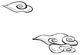
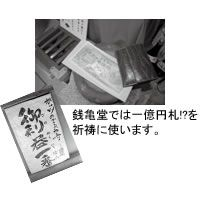

| 自祓い 最近ついていないと思ったら― | |
| 吉田 さらさ | |
| 主婦の友社 (2009) | |
主婦の友社
最近ついていないと思ったら──
自祓い
吉田さらさ
最近ついていないと思ったら──自祓い 吉田さらさ
目 次
まずは、神仏に愛される体質を作ろう
──わたしはこうして人生最大の自祓いに成功し、神仏に愛される幸せ者になった
──自分を守ってくれる特別な神仏に出会うと、自祓いがより効果的になります
──ここに来るだけで心のもやもやが晴れて元気になれる。それがあなたにとっての自祓いの聖地です
──忙しくて遠出できないときや、嫌な気分を急いで払拭したいときにお勧め
──いつものお参りでしっかり自祓いをし、願いごとを確実に叶えていただくためのハウツーです
──神道や仏教は日本古来の美しい文化です。正しいお参りをすれば、身も心も引き締まります
──普通にお参りするだけでなく、修行体験や行事にも参加してみませんか？
 ◎神社やお寺で自祓い その一
▼宿坊に泊まろう
◎神社やお寺で自祓い その二
◎神社やお寺で自祓い その三
▼季節ごとの行事に参加しよう
「自祓い」
この言葉を聞いて、あなたはどんなものを想像しますか。何だか怖そう？ それとも難しそう？ いえいえ、わたしの考える自祓いは実は意外と身近なもので、初詣でやお守りを買って身につけるなどの、昔からお馴染みの行為も含まれます。言うなれば、「日々の暮らしを心穏やかに、かつ充実させるための、和の伝統を生かした心の浄化法」かな？
「自祓い」はわたしが勝手に作った言葉ではなく、そもそもは、神道において「自らの力で自らの穢れを祓うこと」を言います。神様と違って不完全な存在である人間は、日々の暮らしの中で、さまざまな罪や穢れが身につくことを避けられません。しかし、神様の前に立つときは、それらを祓ってきれいな心と体になる必要があります。その際は、神主さんなどに祓っていただくこともできますが、自分で自分をお祓いすることもできるのです。
どこかの神社に行ったときに、はじめてその言葉を知り、「へぇ、そんなことがあるんだ」と、少し驚きました。それと同時に、わたしがこれまでしてきたお寺や神社めぐりの旅は、自分で自分の心を浄化するための行為でもあったのだから、広く言えば、それも一種の自祓いと呼べるのかなと思ったのです。
伝統的な意味での自祓いには古くから伝承されたやり方がありますが、この本では、この言葉をもっと広く捉え、「神様や仏様の力を少しだけ借り、自ら積極的になんらかのアクションを起こすことによって心のリフレッシュを図り、未来に向かって前向きに進むパワーを取り戻すこと」とし、わたしが長年のお寺や神社めぐりで学んだ、自分を浄化するさまざまな方法をお伝えしたいと思います。お寺や神社に行ったり、自分で選んだヒーリングスポットに出かけて何かしてもよいし、忙しくて出かけられないときは、日常生活の中でもできるちょっとした習慣を身につけて実践するだけでも、確実に効果があります。
●病気や経済的な不安など、具体的な悩みや心配ごとがある
●強い願いごとがあるが、実現不可能と感じて否定的になってしまう
●特に問題があるわけではないが、仕事や私生活が停滞気味であると感じる
●心が鬱々とし、仕事や日々の暮らしに喜びや楽しさを見出せなくなった
●みんな幸せそうなのに、なぜわたしの人生にだけいいことが起きないの？と思う
●日常に疲れ、新しい人と会ったり、新しいものごとに取り組む意欲が湧かない
程度の差はあれ、誰もがこんな経験をしたことがあるはずです。そんなとき、この「自祓い」を実践していただくと、自分及び自分を取り巻く環境を肯定的に捉えられるようになり、少しずつ事態が好転します。要するにこの本は、一生懸命に日々暮らしていてもときには現実との闘いに疲れ果ててしまう人、つまり、ごく一般的な人間が、自己否定の悪循環に陥ってしまった心をリセットし、前向きになれる方法を指南するものです。
と言っても、わたしは単に、お寺や神社に出かけて仏像や建物を鑑賞したり歴史を学んだり、ときにはご利益を求めてお参りしたりするのが好きなだけの一般人で、霊能者でも占い師でもありません。したがって、「あなたには悪霊がついています」とか、「前世に問題があります」などという話とはまったく縁がありません。
宗教学者や僧侶や神主などのプロでもありませんし、特定の宗教や宗派に属する信者でもなく、なんらかの教義に従って暮らしているわけでもありませんので、この本は、ごくありふれた人間であるわたしが、これまで数々の神社やお寺にお参りして、自分なりに感じたり学んだりしたことの中から、「もしかしたら、これはわたしだけでなく、他の人にも役に立つのではないか」と思うことを選んで話を進めます。伝統的なお参りやお祓いの仕方や考え方などについては、神社やお寺の方に取材して、ご指導を受けたことを情報としてお伝えしたいと思います。
また、この本の中での「神仏」は、特定の神様や仏様を指すものではなく、「この世、あるいは天のどこかに存在しているはずの、自分を守ってくれる何者か」という意味です。以前のわたしはもっと現実的で、この世には目に見えないものなど存在しないと考えていましたが、長年のお寺めぐりを通して、「何か強い力を持ったものが自分を守り導いてくれている」という感覚を、自然に受け入れることができるようになりました。これはすべての皆さんにお勧めできる考え方ではないかも知れませんが、少なくとも、わたし自身にとっては、その後の人生をよりスムーズに生き、日々を楽しむために、おおいに役立っています。したがってこの本は、神様か仏様か、あるいはあなた自身がイメージする何か特別な存在か、ともかく、目には見えないけれどあなたを導く力強いものとの対話が、すべての前提となります。
読み進むうちに、「普通の人にしては、ずいぶん説教くさいことを言うじゃない。特定の宗教の信者ではないと言いながら、妙に、神様や仏様についてばかり書くし」とか、「そりゃ正論だけど、普通の人は、なかなかそうはいかないわよ。この人って、本当にこんなに心正しくて立派な人なのかしら？」と、反発を覚える方もいるかも知れません。その通りです。わたしは、ときには人を憎んだり悪口も言ったりするダメなやつだし、ちょっと何かに突き当たると心身ともにへたばる弱い部分も、まだたくさん持っています。この本に書いたのは、わたしが「このようにありたい」と日々願っている目標であり、なんらかの悪い精神状態に陥ったときに思い出す指針なのです。よくないことを考えたときに、「いけない、いけない。神や仏は、必ず見ていらっしゃるんだぞ」と再確認して自分の方向性を正し、よい運を授けていただく態勢を作ること。これが、わたしの思う「自祓い」の基本です。
◎わたしは自他ともに認める幸せ者
わたしの考える「自祓い」においてもっとも大切なことは、はじめに、神仏に愛される体質を作っておくことです。その実例として、まずはわたし自身が体験した「人生最大にして最高の自祓い」についてお話ししようと思います。
わたしは霊能者や占い師でもなければ宗教学の学者でもなく、お寺や仏像や神社が好きで、あちこち旅をして回っているうちに、それに関する文章を書いたり、寺めぐりのツアーを企画して案内するのが仕事になった者です。毎日楽しくのんびりと仕事をしておりますが、客観的に見ればそれほど繁盛しているというわけではないし、よくある自己啓発の本のように「ある出来事を機に考え方を改めたところ、次から次へとよいことばかりが起きるようになった」などということもありません。
わたしが生きているのは現実の世界ですから、好不調の波は当然ありますが、「趣味をそのまま仕事にして、何とか生活していける」という状況は、人に話すと「うらやましい。それは願ってもなかなか実現しないことだ」と言われます。「特別お金持ちでもなく、社会的な地位が高いわけでなくとも、好きなことを仕事にできたあなたは、ある意味、世界一の幸せ者ですね」と言う人もいます。
まったくその通り、わたしはとても運がよいのです。これを仕事にしようという明確な意思があって熱心に営業活動をしたわけではないのに、行きたいお寺や神社を旅しているうちに、少しずつ仕事になってきたのですから、ささやかではあっても、ある意味人生の成功者です。むろんそれなりの努力もしたけれど、それ以上に、目に見えないご縁や運に導かれて自分に適した生活を手に入れることができたという自覚があり、今では自分を取り巻くすべてに感謝しています。しかし、この心境に至るまでには、わたしの人生にもそれなりの紆余曲折がありました。
わたしは大学で美術史を専攻したこともあり、仏像やお寺には親しみがありました。しかし、卒業後はそれとは無関係な仕事を長くしてきました。その仕事はもともとわたしの望む内容であり、大好きではあったのですが、時間が不規則でストレスも多かったため、長く続けているうちに著しく体調を崩しました。治しても治しても次の病気が発覚するという状態になり、それとともに心も弱ってしまい、『「自祓い」って何？（自己否定の項目参照）』に書いたような自己否定の悪循環にどっぷりとハマってしまったのです。
そのころも、時々、お寺や神社に行ってお参りすることがありました。特別に「お参りをしよう」と思って出かけたわけではなく、何かのついでにたまたま寄るとか、初詣でに出かけるなどのごく一般的なことですが、特別な信仰心はなくとも、誰でも神社仏閣でお参りする際には、なんらかの言葉を心の中で唱えるものです。では、わたしはそのころ、神仏に向かって、どんな言葉を発していたのでしょう。
「三〇歳を超えてから、わたしの人生には、よいことがひとつもありません。どうして？」
（二〇代には特に問題のない日々を送りましたが、三〇歳を過ぎたころに、大きな病気が見つかるとともに結婚生活が破綻し、ひどい状況で離婚しました。そしてその後、四〇歳を超えるまで、次々と違う病気に見舞われました）
「何でこんなに病気ばかりして、病院と縁が切れないの？ 病院なんか大っ嫌い！ 行くとますます暗い気持ちになります」
（病気の連鎖は、わたしにとっては、かなりキツイものでした。ひとつの病気がようやく快方に向かったと感じた瞬間に別の自覚症状が表れ、まさかと思って病院に行ってみると、「よく見つけましたね。あなたが思っている通りの病気にかかっています」と言われたのです）
「好きで病気をしているのではないのに、『病は気から。あなた自身がその状況を作り出しているのだ』などと、平気で言う他人を、わたしは憎みます」
（体はきついのに毎日会社に行かねばならない日々も辛いものでした。少しはいたわってほしいと思っても、病気というものは、それを体験した人でなければ、その辛さはわかりません。上司や同僚に打ち明けても、まるで怠け者か何かのように扱われたり、「ひどい顔色だ。いつ見ても疲れているみたい」などと無遠慮なことを言われ、人と話をすることすら嫌になっていました）
要するに、わたしは、病気の連鎖や日々の忙しさに疲れ果て、神様や仏様に向かって、恨みごとや愚痴ばかり並べ立てていたのです。
「わたしはこんなに不幸です。それは、あなたたちが、わたしを助けてくれないからです。もともとわたしは神や仏なんか信じていませんが、もしもどこかにあなた方がいるなら、その証拠に、せめて病院と縁が切れるように取り計らってくださいよ」
今思えば、このお参りの仕方は、百パーセント間違っていました。
◎こんなお参りは何度しても無駄？
昔のわたしのお参りの仕方のどこが間違っていたのか。それはまず、神様や仏様の存在をほとんど信じていなかったことです。にもかかわらず、わたしの人生にいいことがまったく起きないのは、生まれついて運が悪いせいではないか。もしも、わたしについている守護霊みたいなものがいるとしたら、そやつはとんでもなく無能なのではないかと思っていました。神や仏などいないので、よいことがあれば、それは自分の力である。しかし、悪いことばかり続けば、神や仏が自分を見放しているせいだ。これは、ものすごく矛盾した考え方です。
でも、「困ったときの神頼み」という言葉もあるように、これってわりと一般的な感覚なのではないかな？ 要するに、人は物事が順調にいっているときは宗教的な事柄にはあまり関心を持たないくせに、悪いことが起きたときにだけ神や仏の存在を思い出し、「どうかお助けください」と祈ったり、うまくいかないと「自分には貧乏神がついている」と感じたりするものなのです。
しかし、一方的に願いごとばかりしているようでは、神様や仏様は相手にしてくれません。これこそが、わたしが、何年間も神社やお寺まいりをして学んだ一番大切なことです。友達だって、自分が困ったときにだけ連絡して一方的に頼るだけでは離れていきます。神様や仏様もそれと同じで、いざというときに願いごとを聞き届けてもらうためには、普段からその存在を意識して、よい関係を作っておかなければなりません。
でも、ちょっと待って。それは神様や仏様が存在すると仮定しての話でしょ？ そもそもわたしは特定の宗教の信者ではないし、病気ばかりしていたころは、神も仏もいるものかと思っていたのに、なぜ今は、神様や仏様がいて自分を見守ってくれていると確信できるのでしょう。その経緯についてはあとでじっくり語りますが、ここでは「神仏に愛され、守っていただくためには、まず、その存在を信じることだ」という、ごく当たり前の前提条件をしっかり頭に入れておいてください。
次に、わたしのお参り方法の間違った点その二。それは、存在すら信じていないはずの神様や仏様に向かって、文句ばかり言っていたことです。確かに当時のわたしにはマイナス要因が多かったけれど、今思えば、「何もよいことがない」と考えるのは大間違いでした。二〇代のころのわたしは、この世にいくらでもある厳しいことや辛いことをまったく経験したことがなく、また、挫折もほとんど知らない恵まれた生活を送っていました。もしもあのままだったら、わたしは、物の考え方や価値観に幅のないつまらない人間になっていただろうし、弱い人の立場を理解することのできない嫌な人になっていたことでしょう。
わりと早い年齢で、病気という、自分だけの力ではどうにもならない壁にぶつかったため、わたしは、「病は気からですよ」などと簡単に言うような人にはならないで済みました。また、病気を含めたいろいろな問題は、結局は自分で乗り越えるしかないということも学べました。神仏は、その場だけでなく、もっと長い目で人を見ていらっしゃるため、「こいつには謙虚さが足りない」と判断したら、厳しい試練をお与えになることもあるんだなと、今では思います。
◎しかし、そんなお参りにも効果はあった
病気以外にもよくないことが続き、四〇代のはじめごろ、わたしはついに決心しました。
「いったん仕事を辞めてみよう」
肉体的にも限界にきていたし、精神的にも休養が必要だったのです。
一方で、「ホントにそんなことしちゃって、あとはどうやって生活していくの？」という不安はもちろんありました。しかし、「ともかく今は休め」という声が、どこかから聞こえてくる気がして、考えれば考えるほど、そうしたい気持ちが強くなりました。
しばらく何をするでもなくぶらぶらしていると、ストレスが消えたせいか、体調が少しずつ戻りました。辞めるころには駅の階段を上るのも辛かったのに、だんだんと歩けるようになり、長かった病院とのお付き合いも切れました。精神的にも前向きさが出てきて、お寺めぐりを始めました。これも特に深い理由はなく、「何だかちょっとお寺に行って仏像に会いたい」というごく軽い気持ちでした。そしてその数年後、お寺や神社に関する文章を書くのが仕事になりました。
このことから、わたしはさまざまなことを感じたり学んだりしましたが、中でも一番強く思ったのは、わたしを取り巻くこの世界に、神とか仏とか呼ばれる何者かが存在するのは確実だということです。昔、わたしがしていたお参りは確かにひどいものでしたが、神仏は、ちゃんとわたしの声を聴いていてくださり、すぐにではないが、長い目で見たら、病院と縁を切りたいという願いが叶い、以前よりもはるかに穏やかに日々を過ごせるようになっていたのですから。
叶ったのは、それだけではありません。
お寺めぐりの旅を続ける途上で、わたしは、そのうちに、これが仕事になるかも知れないという願望とも予感ともつかない不思議な感覚を抱くようになりました。わたしのお寺めぐりは単なる趣味であり、はるか昔に大学で学んだ仏像に関する基礎知識以外は特別に勉強したわけでもないのに、どうすればこれが仕事になるのか。具体的なイメージは何もないままに、わたしはたくさんの本を読み、片端から興味のある寺を訪ねました。
そうしているうちに書きたいことがたまってきました。あるとき、久しぶりの友達から電話がかかってきて、何気なく「わたし、お寺めぐりについての本を書いてみたいのよね」と言ったところ、いくつかの幸運が重なり、すぐに本を出してもらえることになりました。特別な営業活動をしたわけでもないのに、いつの間にか、心の奥底にあった願望が実現していたのです。
◎何かを捨てると新しい運をもらえる
病院との縁を切りたいという願いが、お参りをしたことも忘れたころに叶ったこと。そして、それほど強く意識していなかったひそかな願いごとも叶い、わたしは神仏を、頼れる友達のように感じるようになりました。かつて具合が悪かったころには、「死ぬまでこのような苦労の連続なのかな」と、すべてを悲観していたのですが、今では、ちょっとよくない状況が続いても、「大丈夫、わたしには神仏がついてるから」と、前向きに捉えることができるようになり、小さな浮き沈みにはいちいちおたおたしなくなりました。
そして、神様や仏様には、長期計画というものがあることにも気づきました。辛いことやしんどいことが続く時期もあるけれど、それは次の展開へのステップと考えて気長に待てば、そのうちに、よい運が巡ってくるみたい。
それと、もうひとつ気がついた大切なこと。それは、新たな運を切り開くためには、それまで持っていた何かを捨てなければならないときもある、ということです。人の運、不運は容量の決まった同じ入れ物に入っているため、新しい何かを得ようと思えば、いったん、入れ物の中の既存のものを出さなければダメなようです。
わたしは、体調を元に戻すために、長年やってきた仕事を辞めました。それまでの積み重ねがもったいないという人もいましたし、安定した収入への執着もありましたが、それらを、えいやっとなげうったところ、心身の健康という人生でもっとも大切なものを取り戻すことができたのです。
しかし、わたしの「入れ物」は、案外と容量が大きかったらしく、健康だけでなく、その後の幸運という素敵なプレゼントもいただきました。まだまだ余裕があるらしく、今も、少しずつよいことが起きます。どうやら、以前のわたしの入れ物には、長い歳月の間に、いらないゴミやガラクタがたまりにたまっていたようで、それらを取り払ったあとに、新しいものを入れる空間がたくさんできたようです。
ゴミ、ガラクタとは、見栄、偏見、執着、思い込み、我欲などの、あまりよろしくない感情です。人と比べて自分がどれほど世間で評価されているか。どれだけの収入があり、どんなレベルの生活をしているか。人は年齢を経ると、どうしても、そんなことにこだわるようになり、それを保つために必死の努力を重ねるようになります。わたしもそうでした。今思えばたいしたことのない社会的地位にこだわり、周りの人々を下に見て、自分を偉いものに見せるために威張り散らしていた日もありました。言うなれば、「心のメタボ」。それがどれほどつまらないことかは、そのさなかにいると見えないものです。
わたしにとって、仕事を辞めるということは、長い歳月の間にたまっていたゴミを掃除して、自分をクリアにするということでもありました。別に意識してやったわけではないのですが、結果として、心に積もり積もったいらないものを捨てることができた。これが、わたしの人生における最高にして最大の「自祓い」です。
◎神仏に愛される体質とは
仕事を辞める決心をするとき、どこかから「そうしなさい」という声が聞こえてくる気がしました。理屈で考えればちょっと危険なことでも、思い切って決断できたのは、その声に背中を押されたから。そしてその声の主こそが、わたしが思う神仏であったと思います。ある意味それは、さまざまなゴミを取り払った心の奥底にある、内なる自分の声とも言えます。つまり、神仏とは自分の中に住んでいるものであり、いると思えば心の支えになってくださるし、いないと思えばそれまでだということ。したがって、神仏に守っていただいていると考えることは、ひいては自分自身を肯定し、信頼することでもあるのです。
それがわかってから、わたしのお参りの仕方もすっかり変わりました。一番大きく変わったのは、まず、感謝から入るということです。かつて病気だったころには、少し歩くだけでも息が切れて、バス停で座り込んでしまうときもあったのに、今ではこんなに元気になって、遠くのお寺や神社までお参りに来られます。それだけでも百の感謝に値します。
長くお参りを続けるうちに、各地にお馴染みの神様や仏様もでき、感謝のあとは、近況報告を兼ねた世間話もします。自分のこと、家族のこと、友人のこと、そして、今後の仕事の展開に関する相談。話しているうちに自分の内なる声に気づき、現在もっとも重要な願いごとが絞り込めてくるので、「あとひとつ、これをちょっとお願いしますね」などと申し上げます。神仏はたくさんの人の願いごとを毎日聞き、たいへんお忙しいので、あまり多くのことをお願いするのはよろしくありません。
すると、たいていの場合は、すぐには叶いませんが、病院と縁が切れたときと同じように、忘れたころに叶うことが多いです。また、想像していたのとは違う形で、状況が改善されるケースもよくあります。たとえば、仕事関係で「○○の仕事がしたいので、よろしくお願いします」と申し上げても実際に○○から仕事の話が来ることはまれで、思いもよらない別のところから、予想もしていなかった仕事を依頼されることになるのです。
その取り計らい方は、さすが神仏だけに絶妙で、想定していたよりもうまい具合に物事が運ぶことも多く、「なるほど、こんな手があったのか」と感心させられます。また、一見よくなさそうなことも、長い目で見るとよいことに転じるというような手を使われることもあります。たとえば、力を入れていたある仕事に大失敗してかなり気落ちしているときに、別の仕事が入ってきたことがありました。もしも前の仕事で成功していたら、忙しくて、別の仕事を受けている時間的な余裕などなかったはず。これも、神仏の深遠にして絶妙な計算があってのことですね。
そんなことがたび重なるほどに「ああ、わたしって神仏に愛される幸せ者になったんだな」という確信が強まります。神仏は、同時にたくさんの人の願いごとをお聞きになるため、一個人とは違う視点で大局を見ていらっしゃるし、人ごとに長期計画もお持ちなのです。したがって、まず自己中心的な発想を捨て、謙虚な気持ちですべてをお任せし、順番が回ってくるのを待つのも大切。そういう姿勢が、神仏に愛される基本だと思います。
◎人とのご縁を大切に
一方、神仏にもっとも愛されないのは、「なぜ自分だけが運に見放されるのか」とか、「誰々のせいで自分は不幸だ」などと、お参りの際に愚痴る人です。かつてのわたしがそうでした。しかし、今思えば、「自分は突出して不運であり、不幸である」と思い込むのは、「自分は突出して優れた人間だ」というのと同じくらい不遜なことです。ましてや自分の不幸を人のせいにするのは問題外。この世には確かに、病気など、自力だけでは乗り越えられない壁がありますが、それは誰のせいでもないし、仕事上や人間関係上の不幸は、その一部を自分が作り出しているものです。
また、そういう人はお参りのときだけでなく、普段の生活でも愚痴りがちで、自分がいかに不幸かを宣伝したがる傾向がありますから、神仏だけでなく、周りの人にも愛されません。人に愛されない人には、幸運は絶対にやってきません。なぜなら、よいことや嬉しいことは、ほとんどの場合、人が運んでくるからです。仕事でも恋愛でも、何でもそうです。つまり、人とは、神仏のお使いのようなもの。したがって、人に好かれやすい人は神仏にも好かれ、よいことがたくさん起きるというわけです。
たいへんおこがましい話ではありますが、人生最大の「自祓い」に成功して以降、率直に言ってわたしは人に好かれやすくなり、日本の各地に友達の数が爆発的に増えました。以前は、くだらない社会的地位などにこだわって不遜極まりない態度をとっていたし、親しい人には、病気でしんどい話ばかりしていたのですから、嫌われて当然。当時は「とっつきにくく、陰気くさい」のは生まれつきの体質だからしかたないと思っていました。しかし、このごろでは、驚くことに「吉田さんは明るく話しやすく楽しい人だ」と言われることが多く、皆さん、とても親切にしてくださるのです。
なぜそうなったのかなとあれこれ考えてみて、そうだ、笑顔と感謝だ、と思い至りました。お寺や神社めぐりをしていると、わたしは本当に楽しくて、知らない人にも笑いかけてしまいます。すると、その人とのご縁ができ、次にそこに行ったときに何かと助けてもらえます。特別なお礼をするよりも笑顔と感謝の言葉のほうが有効で、それがまた次なるよいことにつながるのです。
よいご縁をいただいたら、心からの感謝を。そしてそれを、実際に声に出して伝えましょう。それが、人からも愛され、ひいては神仏に愛される一番のコツだと思います。
◎ＳＴＥＰ１のまとめ
「自祓い」とは、神様や仏様に願いごとをする前に、心と体をきれいにして、より神仏に愛されやすい体質を作ることです。この章では、すべての基本になる大切なことを書きましたので、最後に簡単にまとめておきましょう。
神仏に愛されるポイント
 自分を守ってくれる神仏の存在を信じること
自分を守ってくれる神仏の存在を信じること
神仏は自分の中にいる。神仏を信じることは自分を肯定し、信じることでもある。
自分の心を整理し、余計なゴミを取り払うこと
人の心の中には、自分でも認識していない余計な感情がたくさんたまっている。これらをきれいに掃除しよう。
自分の真の願望を見極めること
余計なものを捨て去ると、自分が本当に望んでいるものが見えてくる。神仏に願いごとをしたい場合は、それ一本に絞ろう。
 感謝の心を大切にすること
感謝の心を大切にすること
一見、状況がよくなくても、実は、感謝すべきことがたくさんある。自分だけが不運であるという考え方は禁物。
神仏の深遠な長期計画にお任せすること
願いごとがなかなか叶わなくても、焦るべからず。神仏はあなたよりも広く物事を見ているので、すべてをお任せして気長に待とう。
人とのご縁を大切にすること
人は神仏のお使いなので、素敵な出来事は、多くの場合、人が運んできてくれる。笑顔と感謝の言葉を忘れずに。
◎神仏との対話こそ最高の自祓い
神仏は確かに存在します。でも、その姿は目に見えないので、なかなか信じにくい人もいるでしょう。しかし、歴史を紐解けば、世界のどこの国にも宗教があり、人は、なんらかの神仏の存在を信じて、それを心のよりどころにしてきました。この世には、人の力だけではどうにもならないことが満ち満ちています。そんな中で少しでも心の平安を得るためには、人智を超えた大いなる神がどこかにいて、自分を守っていてくれると考えるのが、もっとも有効な方法なのです。
現代の人は、科学で説明できないことを否定するため、「わたしは神仏に守られている」とか、「仏様の声が聞こえる」などと言うと、変人扱いされることもありますが、少し昔なら、人が神の啓示を聞くのは、別に珍しいことではありませんでした。また、宗教は人の心を支えるだけでなく、美術や音楽など、さまざまな文化を創り出しました。日本では、神道と仏教が、その役目をしてきました。わたしは、神道と仏教に人がどのように関わってきたか、そして、それがどんな美しい芸術品を造ったかに興味があって、神社や寺を巡る旅をしています。
とりわけ仏像を見るのが好きで、あちこちの寺で、素敵な仏様を見つけました。その中でも特に気に入った仏様とは、その後、取材旅行の折などに、またお会いすることがあります。わたしは、いわゆる「引きがいい」というやつで、また会いたいなと思った人とは、どこかで偶然に再会することがしばしばあるのです。仏様との関係もそれと同じで、ご縁のある方とは、何度もお会いすることになるのでしょう。
優れた仏像には、二つの魅力があります。ひとつめは、アートとしての魅力。運慶や快慶などの著名な仏師が造った国宝級の仏像は、背筋を正して鑑賞すべき芸術品です。しかし、そうした一般的評価とは別のところで、わたしには、「語り合える仏像であるかどうか」という価値基準もあります。それは、国宝や重要文化財であるかとか、有名な作品であるか否かには関係がなく、ご縁があると感じる仏像と一人で静かに向かい合ったときに、わたしだけにわかるものです。
「わたしだけにわかる」というのは、少々おこがましく響くかも知れませんが、これは「誰にでも、自分だけに語りかけてくれる仏像がある」という意味です。むろん仏像は、あなただけではなく、たくさんの人に語りかけます。しかし、お堂にどれだけたくさんの拝観者がいたとしても、仏像は、ひとりひとりと視線を合わせ、個々に向かって言葉を投げかけてくれるのです。
昔の人は、芸術品を造ろうと思っていたのではなく、祈りの対象として仏像を刻んだのですから、実は、そちらの見方のほうが正当であり、その場合は「仏様」と呼ぶほうが適切です。自分だけに語りかけてくれる仏様を見つけたら、心ゆくまでその前に座り、心に浮かぶあれこれを話してみましょう。
ときには悩みごとを打ち明けたり、他の人には絶対に言えない自分の嫌な部分について話してみたり。そうしているうちに、何となく心が澄んできて、余計なものを取り去った真の自分が見えてきます。
これこそが、わたしがお勧めする最良の自祓い体験です。
ちなみにわたしが「自祓い」するにあたって助けとなり、個人的に気に入っている仏様については、のちほど「仏様を使い分けよう」の項でご案内します。
◎神様は怖いこともあるけれど......
仏教は基本的に慈悲と救済の宗教です。仏像には、お不動さんや閻魔様のようにおそろしい顔つきのものもありますが、最終的には心優しい方々ばかり。生前の行いが悪くて地獄に落ちた者をも、たくさんの仏様が協力し、何とかして救おうと、さまざまな手段を講じてくださいます。が、仏教伝来以前から日本にあった神道の神様たちには、一筋縄ではいかないクセモノも多いのです。
古事記などを読むと、腹を立てるととんでもなく残忍なことをしたり、ときによってはめちゃくちゃ理不尽だったり、またあるときは、ひどく弱虫だったりする神様もたくさん出てきます。「１＋１が２でないところが日本神話の面白さである」と、ある神主さんもおっしゃっていました。
もともと神道の神様は、森羅万象、すなわち自然。自然は恵みを与えてくれる一方で、人の力ではどうにもならない天災やかんばつを巻き起こす理不尽なものです。仏教の仏様のように、「ひたすら念仏を唱えれば極楽に行ける」というようなわかりやすいご利益はなく、その存在のどこかにおそろしさをはらんでいます。また、わたしはもともとが寺と仏像マニアだったため、お寺ではわりとリラックスしてお参りできるのですが、神社で真剣にお参りをするようになったのは最近のことです。なので、どことなくまだぎこちないけれど、神社に行くときは、神様への敬意を表すために、作法をできるだけ守るように努めています。神社での基本的な作法については、のちほど「神社でのお参りの作法」の項でご案内します。
襟を正して拝殿の前に立つと、まず、畏れ多さをひしひしと感じます。その神社に祀られている個々の神様ではなく、その背後にある大いなる自然の意思に圧倒され、小さな自分の願いごとはさておき、まずは、この世界に生を受けたすべての命のために祈ろうという気持ちになります。おそらくこれが、神社での「自祓い」の基本的な心構えだと、わたしは思います。
春は暖かく、夏には必要な量だけの日照と雨を、そして秋には穀物がたくさん実りますように。もしも穀物がたくさん実れば、日本の食糧自給率が上がって美味しいパンが安くなり、ひいてはあなたの食生活が豊かになります。個を超えた大きな願いごとは、実は、自分自身のためのものでもあるのです。
神様の前で自らを清めたあとは、境内や背後の山に満ち満ちている「よい気」を感じ、心身に思いっきり取り込みましょう。歴史の古い神社は、古代の日本人が特別な気を感じて聖地と定めた場所にあることが多いものです。このごろ「スピリチュアルスポット」やら「パワースポット」という言葉がやたらと流行っていて、へそ曲がりなわたしは「その場所に行くだけでパワーをもらえるなんて、ちょっとお手軽すぎませんか？」と思うこともあります。しかしながら、あちこちの神社や霊山と呼ばれる山を巡った結果、なんらかの霊的なパワーを感じる神社は、確かにあるという結論に達しました。
でも、そのパワーには、よいものも悪いものもあるのでご用心。聖なる山には、気のいい神様もいれば、ちょっと意地悪な神様も住んでいるのです。また、パワーが強すぎて自分の中で処理しきれずに逆効果ということもありますから、合う合わないを見極めるのも大切。わたしのお勧め聖地についても、「奈良、中宮寺の如意輪観音のあるお堂」以降でたっぷりご案内させていただきますので、お楽しみに。
◎特別な神仏とはご縁がある
日本にはもともと神道があり、その後仏教が入ってきて、いろいろな形で全国に広まりました。そのため津々浦々に、数限りない神様や仏様がおられます。その中から、あなたと特にご縁のある方を探し出すのは、けっこうたいへんな作業です。どこへ行ったら、心の通じ合う仏様に会えるのか。どこの神社や聖地に、自分に適した「よい気」があるのか。それを見つけるコツは、ずばり、「ご縁」に敏感になることです。ところで、そのご縁とは、どういうものでしょう。
仏教には「因縁」という言葉があります。と言っても、「あんた、わたしに因縁つけてるの？」と言うときの因縁とはちょっと違います。因とは結果を生じさせる直接的原因、縁とはそれを助ける外的条件のことで、仏教においては、すべての出来事にはちゃんとした理由があると考えられているのです。その点が、１＋１が２ではない神道とは違い、合理的とも言えます。また、よくないことが起きると、「それは前世からの因縁である」などと脅かす人もいるようですが、それは意図的な悪用であって、因縁という言葉自体には悪い意味はありませんので、お間違いなく。
縁という文字を単独で用いれば、そのような誤解を招くことなく、素直によいことと認識できます。「ご縁」は、独身女性がもっとも好む言葉のひとつでもありますが、何も男女の出会いだけでなく、もっと広い意味も含んでいるのです。わたしも一応独身女性ですから、男女のご縁を探すのもやぶさかではありません。しかし、神社仏閣めぐりでは、それ以外のご縁、つまり、親切にしてくださる方や学ばせてくださる方、そして、何よりも神仏との縁結びをメインにしています。
と言っても、ご縁は神仏同様に目に見えないものだし、わたしのような凡人には、そのご縁が前世の何につながっているのかもわかりません。しかし、本やテレビを見ているときに、なぜだかこの神社に行ってみたいとか、写真で見たこの仏様に会ってみたいとかいう直感のようなものはあり、それに従って、あちこちにお参りに出かけるのです。ほとんどの場合、それは大当たり。ときには、散々道に迷った末にたどり着いた場所で、思いもよらず、心地のよい気の存在を感じたりすることもあります。道に迷うのもひとつのお導きであり、偶然ではなく因縁なんだなと、そういう場所を発見するたびに思います。
◎一人で出かけるのが鉄則だ
わたしはそのようにして、直感や因縁による神仏のお導きにより、たくさんの自祓いに適したお寺や神社を見つけてきました。しかし、誰かと一緒だと、うまく発見できないことが多かったです。話に夢中になってしまうと、ご縁を感じ取る感性が鈍るのです。また、どこでどんなご縁を感じるかは人ごとに違うし、仏様の前などで何を語りたいか、どんなふうにお参りや自祓いをするかも、人によってまったく違います。したがって、「今日はご縁を探して、思いっきり自祓いをしたい」という日は、よほど方向音痴な人以外は、一人で出かけるべきです。
一人旅は淋しくて苦手という人もいるでしょう。しかし友人と一緒に旅をすると、ついつい愚痴話をすることが多くなるのは、皆さん、よくおわかりのことと思います。単なる憂さ晴らしや観光目的の旅行ならそれもけっこう。でも、前にも書いたように、よりよく自祓いをする前には、自分の内面を見つめ、もろもろのよくない感情をクリアにしておく必要があります。
人間は一人で生まれ、一人で死んでいきます。どんなによい友人や伴侶がいたとしても、基本的に人間は孤独なもので、悩みごとは、最終的には自分で解決するしかありません。神仏は、その際の助けとして存在するものなので、孤独な状態でお会いしなければ、真の対話は成り立ちません。その前のステップとして、一人で長時間電車に乗ったり、知らない場所を一人で歩く時間が重要になってくるのです。
◎縁日を狙え！
わたしと違って神社仏閣めぐりを仕事にしていない皆さんは、ご縁探しの旅ばかりに時間を使うわけにもいかないでしょう。効率よく神仏とのご縁を結ぶためには、日本に昔からある伝統的な方法を用いるのもお勧めです。そのひとつが縁日です。
縁日と言えば、たいていの方は、金魚すくいやたこ焼き屋台を思い浮かべると思いますが、「縁」という言葉が使われているのにご注目。縁日とは、もともと、特定の神仏とのご縁を結ぶ日、という意味です。その日には神社仏閣で特別な祭典や供養が行われ、人がたくさん集まるため、それを目的に屋台などが立つというわけです。また、お寺では、この日に普段見られない秘仏を開帳することもあります。
縁日の中でもっとも有名なのは、東京、浅草の「ほおずき市」。この日に浅草寺の観音様にお参りすると、普通のお参りの四万六千日分の功徳があるとされ、別名「四万六千日」（四万六千日参照）と呼ばれるご利益の特売日のようなものです。この日には江戸中からたくさんの人が集まったため、夏を健康に過ごすためのおまじないとして、ほおずきが売られるようになりました。また、京都の北野天満宮や東寺では、それぞれ、天神さん（菅原道真）と弘法さん（弘法大師空海）のご縁日に、境内で大規模な骨董市も開催されますので、京都観光のついでに立ち寄ることもできます。
楽しく神仏とご縁を結び、その上、大量の功徳をいただける。縁日は、そのように優れたものなのです。何も遠くに出かけずとも、あなたの家の近くの神社や寺でも行われているでしょうから、ぜひ探してみてください。
代表的な縁日（お寺により多少違う場合があります）
●観音様 毎月18日
●お不動様 毎月28日
●お薬師様 毎月８、12日
●閻魔様 毎月16日
●愛宕さん 毎月24日
●大黒天 毎年６回の甲子の日
●お地蔵様 毎月24日
●お大師様（弘法大師） 毎月21日
●鬼子母神 毎月８、18、28日
●金比羅さん 毎月10日
●天神さん 毎月25日
◎守り本尊にもご注目
仏様とのご縁は人それぞれのものなので、一般的に言われているご利益などとは関係なく、自分なりのよい仏様を見つけるのが基本です。しかしわたしは、昔から決められた「守り本尊」も、高く評価しています。なぜなら、わたしの守り本尊である不動明王様のご利益が絶大で、日々、お世話になっているからです。その件についてはのちほどじっくり語るとして、ここではまず、その守り本尊とは何か、というお話を。
と言っても、何も難しいことはありません。星占いのように、あなたを担当する仏様が決められており、集中的に守ってくださるということです。十二支によって決められており、自分の守り本尊が祀られたお寺に行ってお参りしたり、お守りやお札を身につけたりします。
さらにご利益効果を上げるためには、お参りの際に、ご真言という謎の言葉を唱えます。ご真言とは、仏教の中でも、真言宗や天台宗などの密教系の宗派でよく用いられるもので、それぞれの仏様に呼びかけるための一種の呪文です（「お寺と仏教の基本 Ｑ＆Ａ」Ｑ12参照）。もともとはサンスクリット語で、それをそのまま音写したものなので、意味がわからなくて当然。しかし、あらゆる言葉の中でも最強のパワーを持つものですから、仏様の前では唱えたが勝ちです。
もうひとつ注意しておきたいのは、守り本尊に属する仏様の中には、阿弥陀如来や不動明王のようにきわめてポピュラーで、どこの寺にもありがちなものもあれば、虚空蔵菩薩のように、ちょっと珍しくて、祀られた寺を探すのがけっこうたいへんなものもあるということです。鎌倉の成就院では、毎年一月一三日に虚空蔵菩薩像がご開帳になり、護摩供養が行われます。そしてそれを目指して虚空蔵菩薩を守り本尊とする人々が、遠方からやってきます。そんな苦労をしてまでお参りしたい人が多いのは、やはり、守り本尊のご利益がすごいからですね。
いつでも守り本尊を拝むために、大きなお寺には、すべての守り本尊が祀られているケースもあります。東京なら、浅草寺の影向堂に全員集合しています。また、目黒不動尊の境内にもすべての守り本尊が点在していますので、散歩しながら探してみてくださいませ。
干支別の守り本尊、ご真言、縁日 （ご真言・縁日はお寺によって異なることがあります）
●子 千手観音菩薩 オンバザラタラマキリク 17日
●丑 寅 虚空蔵菩薩 オンバザラアラタンノウオンタラクソワカ 13日
●卯 文殊菩薩 オンアラハシヤノウ 25日
●辰 巳 普賢菩薩 オンサンマヤサトバン 24日
●午 勢至菩薩 オンサンザンザンサクソワカ 23日
●未 申 大日如来 オンバザラダドバン ８日
●酉 不動明王 ノウマクサマンダバザラダンカン 28日
●戌 亥 阿弥陀如来 オンアミリタテイセイカラウン 15日
◎お不動さんとの素敵な関係
守り本尊は、血液型や星占いと違って年がバレるという難点がありますので、あまり大声で言いたくない場合は、やはり一人でひそかにお参りするのがよろしいです。が、わたしはすでに不動明王であることを書いてしまったので、お不動さんがどれほどわたしの人生によいことをもたらしてくれたかについてもお話ししましょう。
まずは、お不動さんのプロフィールについて。本名を不動明王と言われ、仏像界の位の上から三番目の「明王」というカテゴリーに属します。明王は、仏像の位の上位である如来などの使者的な役割を担っているのですが、不動明王は、密教界の最高の仏様である大日如来の化身とされ、実はたいへん偉い方なのです。しかめっ面のくせに片側に三つ編み風のお下げという乙女チックなヘアスタイル、背中に激しく燃える炎をしょったお姿も魅力的なせいか、武士や庶民の信仰も集めました。そのため江戸=東京にも、たくさんのお不動さんを祀ったお寺があり、お参りどころには事欠きません。
その中でも、東京の江東区にある深川不動堂のお不動さんには、よくお世話になっています。こちらは、わたしが認定する「東京一、迫力のある護摩供養」が行われるお寺です。護摩とは、お不動さんなどの仏様の前に壇を設け、護摩木という特別な薪をたいて、願主の願いごとが成就するように祈る修法です（「お寺と仏教の基本 Ｑ＆Ａ」Ｑ９参照）。護摩の火はお不動さんの智恵を表し、薪は煩悩を表します。護摩の祈祷を通じて、むさぼり、いかり、おろかさという心の迷いをお不動さんの智恵の炎で焼きつくし、願望を清め、すみやかに成就するよう祈念していただけるのです。これぞまさに、わたしが考える自祓いですね。
護摩供養は、多くの密教関係のお寺で行われます。通常は、特別にお金を納め、護摩木に願いごとを書いて供養していただきますが、わたしのようにしばしばお参りする者は、そうそうお金も続きません。その点、深川のお不動さんはお心が広く、お金を納めなくとも参列することができます（他のお寺でも、それが可能な場合もあります）。
深川不動尊の護摩のどこがすごいか。それはひとつには音響効果です。こちらでは、毎日数回護摩が行われるためか、お坊さんたちは太鼓や法螺貝の演奏に熟達しておられ、まるで大編成のオーケストラでストラヴィンスキーの「春の祭典」を聞くかのような精神的な高揚を得られます。参列者たちの願いごとを書いた護摩木を焼く炎を見ているうちに、次第に気分がすっきりとしてネガティブな感情が消え、シンプルな願望だけが見えてきます。皆で般若心経を唱えるころには、「お不動さんにお任せしておけば、人生すべてオッケー」という前向きな気持ちになれます。
オマケにこちらでは、「お加持」と言って、参列者の財布やバッグなどの持ち物を預かって護摩の火にかざす特別なご祈祷もしていただけます。その際わたしは、いつも、スケジュールを記入した手帳をお預けするようにしています。そうすると、停滞していた仕事が進んだり、新たな人との出会いがあったりするからです。
お不動さんは守り本尊の中でも心願成就のパワーがとりわけ強い仏様なので、酉年以外の方にもお勧めできます。わたしの友人は、息子さんの入試合格を祈願し、見事に成就して先日お礼参りに行きました。皆さんも、ぜひ一度お試しください。
◎仏様を使い分けよう
わたしが深川のお不動さんに行くのは、「このごろ何だか、物事が停滞気味だな」と感じているときです。お不動さんは、パワーが強烈なので、具体的に進んでほしい仕事があるときなどにお会いするのがよいのです。しかし、仏様の効能はそればかりではありませんので、わたしは、その時々のニーズによって使い分けています。これは、一般に言われている「ご利益」とはまた別の観点に立った個人的なものです。仏様とのご縁は人それぞれなので、すべての人にお勧めというわけではありませんが、これまでわたしがお会いして、「この方とは語り合える」と思った仏様とそのエピソードをいくつか書いておきます。
奈良、長谷寺の巨大十一面観音様
以前、奈良の本を書く際にあちこち歩き回っていたとき、わたしは愛用のデジタルカメラを置き引きされました。大憤慨して長谷寺の観音様に訴えたところ、「あなたはすでに新しい別のカメラを買ったので、古いカメラはもう必要ない。そのため、他の人の手に渡ったのだ」というお言葉をいただきました。その後わたしは、新しい一眼レフカメラの使い方に慣れ、自分なりの傑作写真を撮ることができました。観音様は「一見災いに見えても、長い目で見ればよいことに転ずる」ということを教えてくださったのです。
奈良、中宮寺の麗しい如意輪観音様
この方とお会いするのは、わたしって本当にダメなやつだなと感じているときが多いです。何がダメかと言うと、これほど神仏のお世話になっておきながら、ちょっと状況が悪くなると、「わたしってやっぱりついてないのかな」とか「基本的にわたしは幸薄いのね」などと、いきなりネガティブになってしまうことです。また、やめようやめようと思っているのに、ちょっと嫌なことがあると、人の悪口も言っちゃったりして。しかし、こちらの如意輪様は、人間は所詮弱いもので、何度前向きに生きようと決意しても、すぐに元に戻ってしまうことを許してくださる包容力をお持ちです。麗しい如意輪様の、少し困ったような優しい笑みを眺めながら、わたしは自らのダメっぷりを、静かに反省するのです。
京都、三千院の優しい阿弥陀如来様
正直なことを言えば、わたしはかつて体調が悪いときに、「こんなに辛いのなら、死んでしまったほうがマシ」と思ったことがありました。自殺願望というほどではありませんが、もしも明日の朝目覚めなければそれでもいいなどと考えたりしたのです。が、一方で、病気が悪化すると「これで死んだらどうしよう」などと矛盾した怯えも抱きました。要するに人間とは、死をおそれているにもかかわらず、捨て鉢になったときには「死んじゃいたい」と口走ってしまったりする困った生き物なのです。阿弥陀如来は、人間が根源的に持っている死ぬことへの恐怖をやわらげるための仏様。生前に徳を積む努力した人はそれなりに評価され、極楽浄土へと導いていただけます。三千院の阿弥陀様は、「あなたは努力が足りないので、極楽行きはまだ先ですよ。でも、わたしはいつもあなたを見ていますよ」と語りかけ、死というものに対するわたしの屈折した感情を浄化してくださいました。
京都、戒光寺のびっくり釈迦如来様
この方は「身代わりの丈六さん（大きな仏像のこと）」として京都の人々に親しまれ、いろいろな災いの身代わりになってくださると言われます。格別大きいとも言えないお堂に入った瞬間、お釈迦様のあまりの大きさにびっくりするでしょう。なぜか、この方にお会いするときのわたしは、取材などで京都を歩き回り、いつも疲れ果てた状態。このお寺はほとんど観光客が来ないので、お釈迦様の足元に座り、心ゆくまで「もう歩けません」と訴えることができます。三〇分も座っていると、さっきまで鉄板のように重かった足が軽くなったのを感じます。本当に身代わりになってくださったんだなぁ。
◎太陽の道に連なる聖地
自祓いを目的として神社や寺に行く場合、そこに祀られる神仏との対話がポイントとなりますが、それと同時に、霊気のある場所に行くこと自体が自祓い効果を生むのです。なぜそうなのか。これは言葉ではうまく言い表せない感覚的なものです。理屈ではなく、なぜかこの場所に行くと不思議に心地よく、心のくもりが消えて、すっきり前向きな気分になれる。そんな場所が、あなたにとっての自祓いの聖地です。公園でも自然の森でも、あなたが居心地がよいと感じるならばどこでもよいのですが、お寺や神社は、それなりに意味のある場所に建てられていることが多いので、よい場所を探すには、やはり、そこから当たってみるのがよさそうです。
歴史の古い神社や寺は、多くの場合、古代人が聖地と見なした場所に建てられています。古代人にとっては森羅万象が神であり、聖地とは、神様が降りてくるところという意味です。それは多くの場合、山や森でした。山には人の住む里とは違う霊気があり、また、高い場所だけに天に近く、神様が降りてきやすいと感じたからです。古代の人々は、わたしたちが想像する以上に知恵があり、現代人が失ってしまった「見えない物を感じ取る能力」もあったのだと思います。
その一例として、「太陽の道」というものがあります。春分の日と秋分の日に太陽が通る北緯34度32分の線上に古代遺跡や神社がいくつも並んでいる、とても不思議な道です。東は伊勢、西は淡路島の東西二〇〇キロほどの間にあるのは、伊勢の斎宮跡、室生寺、長谷寺、三輪山、箸墓古墳、二上山など、名だたる聖地ばかり。他にも、この線上の森の奥深くには、磐座がいくつかあるそうです。
磐座とは、神が降りてくるとされる巨岩のこと。神様は目に見えないので、その岩そのものがご神体と見なされます。神道では自然の中のすべてが神ですから、ご神体も、もともとは、山や森、樹木、巨岩などでした。神社に社殿が造られるようになったのは、のちに伝来した仏教の影響で、それ以前は、森の中にあるこうした自然物に神様を降ろして祭祀を行っていました。
太陽の道上にある数々の聖地は、現在はお寺になっているところもありますが、歴史を遡れば、多くが文字通り太陽の神様を祀る場所だったようです。太陽は水と並んで人の暮らしに欠かせないものですから、そのパワーをもっとも強く感じる場所で祭祀を行い、より多くの恵みがあることを願ったのです。太陽信仰の中心的な神様は、むろんアマテラスオオミカミです。太陽の道の線上に、アマテラスオオミカミを祀った伊勢神宮の斎宮、日本で一番有名なご神体の山である三輪山、一説には卑弥呼の墓と言われる箸墓古墳などきわめて重要なものが並んでいるのは、やはり、偶然ではないように思われます。
古代の人が、どのようにして太陽の通る道を正確に知ったのか。その線上に、点々と聖地を定めて、そこでどんなことを行ったのか。わたしは専門の研究者ではないので、詳しいことはわかりません。しかし古代人が、ある種の直感で、太陽の神様と対話しやすい場所を選んだことは確かでしょう。
◎室生の里の新しい聖地
数ある太陽の道沿いの聖地の中でも、とりわけわたしは、室生寺、長谷寺、三輪山あたりが大好き。一人で歩いていると、えも言われぬ幸福感が湧いてきます。道すがら出会う人は、ことごとくいい人ばかり。地元の仏様や神様も好意的に語りかけてくれ、小さなよいことが次々に起きます。何だか土地そのものに招かれているような、そんな嬉しさに背中を押されて、過去のことも将来のことも何も考えず、どんどん歩きます。今、ここで生きていることが、この上もなく幸せに思える。そんな気分こそが、最高の自祓い状態だと思います。
中でももっともよいと感じる場所は、室生寺から少し山を登ったところにある、「室生山上公園芸術の森」です。室生の村の人の「最近できたところなので、ぜひ行ってみなさい」というお勧めで行ってみると、そこは、世にも美しく心地のよい静寂に満たされたところでした。
中でも、「太陽の塔」と呼ばれる赤い小さなピラミッドと、それを貫く「太陽の道」の付近が、何とも言えず気持ちがよい。この「太陽の道」は、あの「太陽の道」と同じ北緯34度32分の上を通っています。つまりこれは、太陽の道沿いにある古くからの聖地と同じく、太陽信仰のためのオブジェということなんです。
はじめてここに行ったのは、秋の初めの空が澄みきった日でした。平日のせいか、わたしのほかには誰もおらず、ちぃ、ちぃ、ピピピ、という鳥の声がかすかに聞こえるだけです。わたしは自分が何者であるかさえもすっかり忘れ、そこにあるオブジェや樹木と同じように、ただひたすらに太陽の光を浴びました。日光消毒という言葉もあるように、太陽の光には、心だけでなく体も浄化する力があるようです。
◎マイ聖地の見つけ方
そこでわたしが感じた自祓い効果は極上のものでした。しかしその土地に流れる気のよしあしは各人の感じ方によるものなので、皆さんにも絶対にお勧め、とは言えないのです。わたしが永遠にいたいほど好きだと思う場所でも、逆に、何だかここは居心地が悪いなぁと思う人もいるかも知れないし、何も感じない人がいるかも知れない。では、どうやって自分に最適な自祓いの聖地を見つけたらよいか。これはもう、たくさん行ってみて、その中から、自分に最適な場所を選びましょうとしか言えません。でも、それではあんまりなので、わたしなりの簡単なマイ聖地の見つけ方を書いておきましょう。
事前に情報収集をしよう
このごろは、スピリチュアルスポットに関する雑誌記事なども多いので、写真をよく見て、あなたが何かを感じる場所をリストアップしましょう。わたしも、次に行く場所を探すときは、そうしています。その際は、「かくかくしかじかだからここに行こう」という理屈ではなく、「何だかわからないけど、心惹かれる」という直感を大切にしています。
「ついで」は偶然にあらず
次にわたしが大切にしているのは「ついで」です。行ってみたいなと思う場所があるとき、少し待っていると、その近くに、別の目的で出張する機会が降って湧くケースがあります。これも偶然ではなく何かの因縁で、その土地の神様が「いらっしゃい」と招いてくれているんだなと解釈し、ついでに足を伸ばしてみて、よい場所を発見！ということもしばしば。皆さんも、仕事で出張する機会には、近くに行ってみたい場所はないか調べてみてください。
すいていそうな時間に一人で行こう
前の章にも書きましたが、自祓いの旅は一人が鉄則です。また、どんなによい場所でも、観光客がたくさんいたら、せっかくの気がかき乱されてしまいます。もしも、あなたの目指す場所が混雑していたら、時間や季節を変えてもう一度試してみましょう。お寺や神社は、早朝、もしくは夕暮れ時が最高です。
神社や寺は、境内をしっかりチェック
有名な神社や寺は、往々にして境内が広いものです。そこにはさまざまな建物や石碑、石仏、樹齢の古い巨樹などがあるので、どの場所が特に心地よいかを、歩き回って比較してみましょう。感性を研ぎ澄ますトレーニングにもなります。
周辺の山や森には何かがある
古くからある神社の周囲には、一般人が立ち入ってはいけない禁則地が存在することもあります。日本最古の官道（国が定めた道）である奈良の山の辺の道沿いには、日本最古級の神社がいくつかあり、その中でももっとも重要な石上神宮には、見るからに霊気漂う禁則地があります。そこからは、勾玉、剣など、古代人が祭祀に使った大切な品物が多数出土したそうです。ただし石上神宮は、境内全体がこの世ならざる神聖な空気に包まれたところで、わたしのような凡人にとっては、個人的な癒しや自祓いとは無縁な、畏れ多い場所とも言えますが......。
できる限り自分の足で行こう
わたしは歩くことが好きです。経済的な理由もありますが、神社や寺に行く際は、ある程度までは公共の交通機関を使い、そこから先は、ゆっくり歩いていくことにしています。タクシーで行くと、単なる名所めぐりの観光旅行になってしまいますからね。歩くことがなぜいいか。それは、その過程が自祓いの大切なステップだからです。一定のリズムで体を動かしていると、いろいろなことが頭に浮かんできます。その中から、よいことだけを選び、よくないことは道端に捨てます。そうすることで、よりシンプルな心で神様や仏様にお会いすることができます。多くの聖地は山の上にあるため、時には山登りをしなくてはならないこともあります。また、急な石段があるところも多いものです。昔の人は、山を歩くこと自体を修行とみなし、体を酷使することによって心を浄化し、その結果、神仏と対話できると考えていたのです。
◎よい気わるい気ふつうの気
散々寺や神社に行き、神仏との対話を試みていますが、もともとわたしは霊的なことに敏感なたちではまったくなく、人に見えないものが見えたなどの神秘経験もほとんどありません。わたしはこのごろ石仏が大好きで、お寺に行くと墓地に分け入り、朽ち果てた石の仏様を探しては写真を撮っています。「そんな石仏には怨念がこもっていそうなのに、写真なんか撮って大丈夫？」とよく言われますが、今のところ、それによって悪いことが起きたことはありません。わたしのような鈍感者には、悪霊も、とり憑くしまがないのでしょう。
しかし、聖地めぐりの際には、さすがのわたしも、何かは感じます。それは、大きく分けて、次の三段階です。
1. うーん、ここにはよい霊気がある。何だか気持ちがよいから、ずっとここにいたいな。
2. ここに漂っているのは、特別によい影響も悪い影響もない、普通の霊気だな。
3. 強い気があるけれど、ちょっとわたしには合わないみたいだな。
この中では、もちろん、１が、わたしの自祓いの聖地となります。２や３とどこが違うかと言えば、その土地を司る神様との相性でしょう。これは各人で違うし、また、同じ人であっても、そのときの心のありようや体調によっても違うと思うので、いちがいに「ここはよい、ここは悪い」と、決め付けないようにしています。基本的に何も否定しないことが、近年のわたしのモットーだからです。
しかし、対処の仕方は人それぞれ。わたしの友人Ｓは、子供のころ、原因不明の高熱が出ることが何度かあり、あとになって、そのときに行った場所の近くにお稲荷さんがあったことがわかったらしい。そのように因果関係が明らかなので、彼女はどこのお稲荷さんにも近づかないようにしています。また、友人Ｍは、職場の近くの上野の両大師堂と大黒天が祀られた護国院の雰囲気がどうも苦手なのだそうです。しかし彼女は、たいへん負けず嫌いな性格なので、その二つの場所の前を通りかかると、なぜかチャレンジ精神が湧いて、ついお参りしてしまうのだとか。
「何事も苦手を作っちゃだめ。自力で克服しなくちゃ」というのが彼女の人生訓。こういう考え方も、ある意味、積極的な自祓いと申せましょう。
◎深泥ヶ池の怪
土地の霊気による自祓いは、仏像による自祓いと違って対象物が目に見えないため、効果がわかりにくい場合もあります。しかし、ときによっては速攻で嫌な気分を祓ってくれることも。実を言えば、わたしにも、こんな体験が一度だけあります。
あれはまだ、本格的なお寺めぐりを始めたばかりのこと。京都をぶらぶら歩いていて、気がつくと深泥ヶ池の前におりました。そのスジの方々の間では、深泥ヶ池は心霊スポットとして有名です。しかしわたしは前にも書いたように心霊関係には鈍感な体質ですから、格別怖いとも思わず「何だ、普通の沼じゃないの」と、しばらく眺めて立ち去りました。
ところが、そこから少し歩いたところで、わたしは突然、体の変調に見舞われました。何だかひどい疲労感で頭がぼうっとし、全身が異様に重たく、歩こうとしても、なかなか足が前に出ないのです。こんなとき京都の南方面にいるなら、「京都、戒光寺のびっくり釈迦如来様」で紹介した戒光寺のお釈迦様のところに駆け込むのですが、深泥ヶ池は京都北部。困り果てて道端に座り込み、はたと思いました。
「もしかしてこれが、霊に敏感な人がよく言う、何かしょってきちゃったってやつなんだろうか？」
何度も言うようにわたしは心霊関係には鈍感ですが、わたしの友人Ｔなどは超敏感体質で、一緒に旅行をしていると、「ダメ、何かいるから、ここから先にはどうしても行けない」とか、「さっきのところから何かついてきちゃったみたいで、どうも具合悪い」などと言うことが多くて困ります。「いい大人が、よくもまあ、こういうインチキくさいことを真顔で言えるもんだ」と内心思っていたのですが、実際に体験してみると、あれはまあ、けっこうおそろしいもんですなぁ。
こういうことはあとにも先にもそのとき一度きりだったので、今ではこんなノンキなことも言えるのですが、その場ではそんな余裕はなく、ああ、怖い怖い、もうダメだと、震えがきました。とにかくここを離れてどこか別の場所に行かなくちゃと思い、来たバスに飛び乗って上賀茂神社へ。重たい足を引きずるようにして拝殿前に行き、「祓いたまえ、清めたまえ」とお参りし、しばらく境内の隅で座っていると、だんだんと体調が戻って精神的にも落ち着いてきました。はぁ、やれやれ。
ちなみにその上賀茂神社は、桓武天皇の御代に都が京都に遷されて以降、京都の総鎮守として君臨してきた由緒ある神社で、あらゆる災難を除いてくださる厄除の守護神として広く信仰されています。さすが、そんじょそこらのお宮さんとは違う速攻パワーに感服いたしました。
そして深泥ヶ池の名誉のために付け加えておきますと、この沼は、氷河期時代以来の動植物が生息するたいへん貴重な場所で、天然記念物にも指定されているとか。したがって、行ってはいけないということはまったくなく、長居しても平気な人がほとんどだと思います。たぶん、そのときのわたしは、もともとちょっと体調が悪くて、たまたまそこにいた何かと悪い意味で波長が合っていたずらされたとか、その程度のことではないでしょうか。
◎わたしの好きな自祓いの聖地
基本的に、自祓いの聖地は、自分の目と足と直感で探すべきものです。また、何も遠くに行かずとも、ご近所に「これは」と思う場所がある人は、それもけっこう。仕事が忙しくて旅に出られないときは、大きな木のある公園、水が流れるところ、ビルの谷間の風が吹きぬける空間など、都会の中で自然を感じる場所に行ってみましょう。感性を研ぎ澄ませば、そこにもきっと、心を浄化してくれるよい気が流れているはずです。
とは言え、やっぱり、昔から聖地と見なされてきた場所のパワーはすごいです。歴史の積み重ねも違います。以下は、わたしがこれまで訪ねた神社や寺の中で、ここは一般的にもお勧めではないかと思う場所のリストです。あなたなりの聖地探しの参考にしてくださいませ。
奈良、中宮寺の如意輪観音のあるお堂
春風に吹かれながら如意輪様とお話
敬愛する中宮寺の如意輪様のことは「お不動さんとの素敵な関係」にも書きましたが、あそこは、お堂そのものもよろしいです。何がよいかというと、季候のよいときにはすべての扉を開け放つため、斑鳩の風がそよそよと吹いてくるからです。通常お寺のお堂は暗いものですが、こちらは比較的新しい建物なので、光もたっぷり入って実に心地よい。何時間でも座って、心の空気清浄機こと如意輪観音様と対話していたくなります。
長野、戸隠神社の奥社
ちょっとの山登りでたどり着く天空の聖地
昔々、アマテラスオオミカミが弟スサノオノミコトの乱暴ぶりに怒って天の岩戸にお隠れになってしまったとき、力自慢のタヂカラオノミコトが戸をこじ開けてアマテラスオオミカミを引っ張り出しました。その戸が飛んできたところが、ここ戸隠です。奥社・中社・宝光社・九頭龍社・火之御子社の五社からなり、どこもそれぞれに味わい深いのですが、とりわけ、一番上にある奥社の神々しいことったら......。車では行けず、三〇分ほど杉並木を歩き、急な山道も登らねばなりませんが、その過程こそが、じょじょに心の垢を洗い落とす自祓いタイムとなるのです。戸隠山を背景にした奥社の神聖なる風景を見たら、誰もが、ここに来られたことを感謝せずにはいられません。神様の住む天は、もうすぐそこです。
箱根神社の赤い鳥居
心が弱ったときは芦ノ湖の優しい神様と対話
箱根神社は縁結びのご祈願処として大人気だそうです。またの名を九頭竜神社と言い、九つの頭を持つ龍神様を祀っています。その龍神様は毎月一三日に降臨なさるので、その日は、良縁を求める若い女性でいっぱいだとか。しかしわたしにとっての箱根は、温泉につかり、ついでにちょっと神社に寄って自祓いできる心身のリフレッシュスポットです。とりわけ、芦ノ湖のほとりに立つ赤い鳥居付近が好き。ずっと昔、まだ体の具合がよくなかったころに一人で来て神様にあれこれ訴えたところ、「まだまだあなたの人生は長いから、これから思わぬよいこともありますってば」と、慰めてもらった思い出の場所。わたしにとって芦ノ湖の神様は、優しいお姉さんのようなものです。
箱根阿弥陀寺の琵琶のお堂
山中の隠れ寺で美しい阿弥陀様と出会う
箱根のお勧めをもうひとつ。塔ノ沢温泉あたりから険しい山道を三〇分ほど登った山中にある阿弥陀寺です。ここもまず、山登りの過程で心身を浄化することができます。前にも書いたように、昔の人は山を歩くこと自体を修行とみなし、体を酷使することにより精神を研ぎ澄まし、その結果、神仏と出会えると考えていました。
むろん三〇分程度の山登りでそこまではいきませんが、道沿いには昔の人が刻んだ石仏も点々とあり、それらと対話しながら、少しずつ、不要な感情を捨てていくことができます。登りきったところに小さなお堂があり、運がよければご住職が奏でる琵琶を聴くことができます。また、堂内にある阿弥陀様の像にも心癒されます。どちらも、がんばって山を登ってきたことへのご褒美に思えます。
姫路、圓教寺と書写山一帯
平安のうかれ女も自祓いにやってきた
何年も前に写真で見て、ぜひ行きたいと思い、はるばる訪ねました。圓教寺は姫路市郊外の書写山という山の上にあり、途中まではロープウェイで登れるのですが、そこから先は、かなりの歩きになります。はじめてここに行ったのは新緑のころで、山全体が、世にもすがすがしい霊気に包まれていました。萌えいずる若葉を見ながら歩いていると、いい加減くたびれはじめた年齢のわたしも、四季のめぐりとともに再生できるのではないかしらと思えてきます。実際に今のわたしは、見てくれや肉体の機能はともかく、精神的には若さを取り戻しました。それは、そのころに散々した山登りによるプチ修行のおかげだと思っています。
圓教寺は建物も壮麗で素晴らしく、わたしが訪ねるちょっと前に、映画「ラストサムライ」の撮影で、トム・クルーズも滞在したという話を聞きました。平安時代には、和泉式部も来たということです。和泉式部は藤原道長に「うかれ女」とまで呼ばれた女性で、数々の男性と浮名を流しました。圓教寺を開いたお坊さんの徳に惹かれてこちらを訪れ、最初は門前払いを食わされたものの、煩悩だらけの自分も、あなたの徳で導いていただきたい、というような内容の歌を詠み、入山を許されたとか。平安のスキャンダル女王も、仏様の前で自らを清め、自祓いすることを望んでいたのでしょうか。
滋賀、長命寺の心臓破りの石段
登ること自体が心の修行であることを実感
長命寺は近江八幡市の郊外、美しい琵琶湖のほとりにあるお寺です。ここは何と言っても、八百八段の石段がすごい。石段で有名なのは四国の金比羅さんですが、長命寺の石段はあれよりもっと勾配がきつく、下から見上げると、まるで天まで届くかのよう。ええっ、本当にここを登るの？と一瞬躊躇するのですが、来てしまったからにはしかたない。ジャックと豆の木みたいな気分で登っていくと、降りてくる人々が、「まだまだだ」とか、「がんばれ、あとちょっと」と言ってくれます。あまりにもきつくて、途中でもう諦めようかなと何度も思いましたが、人の言葉が仏様の励ましのような気がして前に進みます。一段登るごとに自分が少しずつ進歩している気がして、登りきったときには、自分で自分を褒めてやりたい気分になりました。この達成感が、仏様がくれる最大のご利益なんだな。もちろん、登ったところにある境内も、とても神秘的な自祓いスポットです。
鎌倉、佐助稲荷神社
狐たちのかわいさに惹かれてついつい長居
お稲荷さんが苦手な友人Ｓの話を前に書きましたが、彼女だけでなく、どうもお稲荷さんは怖いというイメージを持つ人が多いですね。狐は人を化かすと言われるから怖いということなんだろうか。しかし、お稲荷さんは農耕の神様を祀る神社で、狐はそのお使いという役割です。だから、もともとは別に怖いところではなく、わたしは京都の伏見稲荷も鎌倉の佐助稲荷も大好きです。佐助稲荷の境内には小さな祠と狐の像が無数にあり、まるでプチテーマパークのよう。たまにはいたずらもしそうだけれど、本当は気のいい狐さんたちと対話していると、ついつい時を忘れてしまいます。自祓いというよりも、ちょっと現実を離れたいときに遊びに行く別世界という感じもしますが、源頼朝の出世を助けた神様が祀られた神社なので、開運パワーもすごいんです。近くの銭洗い弁天にもお参りすれば、お金持ちにもなれて、人生安泰。
鎌倉、宝戒寺のお堂の中
鎌倉散歩の終わりにお礼を申し上げる場所
宝戒寺は駅に近いので、鎌倉をあちこち歩き回ったあと、帰りがけに寄ることが多いです。格別どうということもないお寺さんだけれど、なぜだか不思議に好きなんです。あるとき、知り合いの方をお連れしたら、「それは、ここの気とあなたの中の何かが同調するってことなんですよ」と。この人はわたしと違ってスピリチュアル系に強い人なので、妙に納得しました。理由はわからないけど、何だかここが好き。その感覚が一番大切なんですね。こちらは鎌倉には珍しく、お堂に上がってゆっくり仏様と対面できるという点もよいのかも知れません。お堂には大きな地蔵菩薩が祀られており、安らかな気持ちで、今日一日、よい鎌倉散歩ができたお礼を申し上げることができます。
東京、御岳山の武蔵御嶽神社周辺
東京都民の守り神の奥懐で朝のお祓い
東京の近くで、どこかいいところない？と聞かれたときには、いつもここを推薦しています。はじめて行ったときは、「えっ、ここってホントに東京都内？」と驚愕しました。神の気配が色濃く、妖しいほどのディープな気が流れていて、下界とは隔絶された別天地。それでいて東京都民としての親しみも感じられる、実によい自祓いスポットです。しかし、ここの本当よさは、山上で一夜を過ごしてみないとわかりません。神社の周辺にはたくさんの宿坊があるので、ぜひ泊まってみてください。夜には、大東京の素晴らしい夜景が見えます。朝はご来光、そして、江の島から千葉までの大パノラマ。ここでは毎朝、東京全体に向かってお祓いが行われます。われわれ都民は、御岳山の神様に清められ、守られていたのです。
東京、浅草の待乳山聖天のお堂
迷いをふっ切って願いごとを一本化できる
取材などで、浅草にもよく行きます。そのとき必ず立ち寄るのが、待乳山の聖天さん。知名度はやや低いですが、実は浅草寺より古い由緒のあるお寺です。推古天皇の御世に突然待乳山が盛り上がり、金色の龍が降臨してその山を守ったとか。現在でも待乳山は小さいながら本当に山で、石段を登ったところにあるお堂は、東京とは思えない静寂と神秘感に包まれています。
祀られている聖天様は、インドではガネーシャと呼ばれ、金運、商売繁盛などの現世利益をもたらします。日本では絶対の秘仏として扱われることが多く、そのお姿を拝むことができませんが、神通力の強さは仏様の中でも一番とか。強い願いごとのある人は、その願いが正しい心から出たものであるか、迷いはないかをよくよく考えてから、こちらでご祈祷をしていただくとよいそうです。わたしはちょっと怖くてご祈祷をしてもらったことはないけれど、ここのお堂に行くと何となく気分が引き締まり、自分の決めた目標に向かって邁進しなくちゃと思えてくるのです。
東京、大宮八幡宮周辺
古代から聖地であった東京のヘソ
ここではまず、都内とは思えない森の深さに感動します。善福寺川沿いの和田堀公園と一体となった鎮守の森は、樹木のささやきを聴くのに最適。神社としての歴史も古く、創建は平安時代の末期。京都の石清水八幡宮のご分霊が祀られています。しかし、ここにはもっとはるかに古くから人の暮らしがあり、付近からは、弥生時代の祭祀の跡が見つかっているとか。季節ごとに古式ゆかしい行事も行われ、とりわけ宮中の伝統にのっとった七夕が最高に美しいです。また、六月末には「夏越しの大祓い」、年末には「年越しの大祓い」が行われ、半年分の罪、穢れを自ら祓うことができます（これがホントの自祓い。詳しい方法は「夏越しの大祓い」を参照のこと）。ちなみにここが東京のヘソとされるのは、人口の重心がちょうどこのあたりだからだとか。
東京、明治神宮
東京を浄化する永遠の森と美しい湧き水
最後は、都心のスピリチュアルスポットとして名高い明治神宮。うちからも比較的近いので、わたしも行きつけにしています。何か考えごとのあるとき、ちょっと嫌なことがあったとき、ゆっくり読書をしたいとき。どんなときにも受け入れてくれる懐の深さが魅力ですね。境内が広いため、あちこちによいポイントがあるのですが、特に好きなのは、参宮橋のほうの入り口から入って森の小道を歩いたところにある北池。宝物殿との間に芝生の広場があり、天気のよい日は、皆そこで寝そべり、それぞれの思索にふけっています。美しい鳥や蝶々も飛んできて、極楽浄土のごとき心地よさ。近くにこんなよい場所があるのは、幸福のきわみであります。
明治神宮の森は人工で、明治時代までは、ただの荒れ野でした。森を造ることを計画した学者さんは、神社につきものの杉や檜は、ここには適さない。樫や椎などの照葉樹をたくさん植えれば、自然な形で森が再生され、永遠のものとなると考えたのだとか。そのかいあって、この森は、今も完全に自然のサイクルで生き続けています。もしもこの森がなかったら、都心の気温は、今よりもっと高くなるはずだとも言われます。神宮の森は東京全体を浄化しているのです。初夏の花菖蒲で有名な神苑の奥には、清正井と呼ばれる湧水スポットもあります。飲むことは禁止されていますが、冷たく澄んだ湧き水に手を浸すことはできます。
◎肩上五〇センチの神様
神仏を信じると、お徳なことがたくさんあります。第一に、信じてしまえば、よくない出来事を乗り越えるのがラクチンになります。今はちょっときついけど、神様がそのうちなんとかしてくれるさと、物事を楽観視できるようになるからです。第二に、小さなよいことが起きるたびに、ほぉら、わたしって神様に愛されてるわと、普通の何倍も喜べることです。第三に、現実に愛してくれる人がいないとしても、つまり端的に言って配偶者や恋人がいないときにも、わたしには神仏という、もっと頼れる人がついているから平気と思えることです。
しかし、一方で、その「信じるだけ」というのがなかなか難しいのも事実。かく言うわたしも、ちょっとしんどいことが続くと、すっかり神仏の存在など忘れ果て「ちぇっ、何でわたしばかりがこんな目に遭うのかな」と思ったり、大々的に愚痴ったりすることもあります。仕事がないときには、「おいおい、こんなんで、老後は大丈夫なのか」と不安になったり、逆に仕事が立て込んで忙しくなると、「病気療養のために忙しい会社員生活を辞めたはずだったのに、何だって今さらこんな忙しい思いをしなくてはいけないんだ」と、実に矛盾した不満を抱いたり。そのちょっと前には、「神様、仏様。どうかお仕事の依頼がたくさんありますように」と祈ったはずなのに、まったく困ったもんだ。
つまりわたしってやつは、どういう状況になっても、何かしらよくないことを見つけて文句を言ってしまう体質なんです。これまで書いてきた「何も否定しないようにしている」とか「常に前向きに」なんてウソばっかり。しかし、そんな中にもよい点はあります。それは、すぐに反省することです。
わたしは、神仏はすぐそのへんにいて、わたしのすることを黙ってごらんになっていると思っています。どこにと言えば、だいたい肩の五〇センチほど上あたりに浮遊しておられる感じでしょうか。言い換えれば、神仏は、いると思えば、常に自分と一緒にいる、ということです。何かの事情で二者選択の必要が生じた際、「ほら、こっちを選べばいいんだよ」とか「ああ～、そっちに行っちゃダメだ」と教えてくれたりするときに、その存在のありがたさを強く感じます。
一方、もっとも存在を感じない、というかすっかり忘れているのは、何かに腹を立てているとき、愚痴を並べたてているとき、人の悪口を言っているとき。そういうときのわたしは醜いしかめっ面をして、最悪のののしり言葉を吐いています。が、次の瞬間、はたと思い出すのです。
「いけない。こんな醜態を神様に見られてしまった」
以前のわたしなら、いったんネガティブ方面に気分が傾くと、とめどもなく落ちていき、わたしの人生って最低最悪ですべてが絶望的！というところまでいってしまったものですが、神仏の存在を意識するようになってからは、ある程度のところで抑制されて反省する方向になるのです。
「ごめんなさい、こんなにお世話になっているのに、わたしったら、また悪い癖でこんなふうになっちゃいました」
これが普通の友人などだったらとっくに見放されているでしょうが、わたしの神様は実に辛抱強くて度量が広いお方なので、どれだけ頻繁にこんなことがあっても許してくださいます。その上、しばらくすると、反省したことへのお駄賃として、ちょっとしたいいことも起きたりして。かくしてわたしは、次にネガティブ状態に陥るまでの一定期間、「わたしって神に愛される幸せ者だわ」と、能天気に日々を送ります。わたしの毎日は、まあ、そんなことの繰り返し。
それって要するにご都合主義では、と思う人もいるかも知れません。自分の事情に合わせて、神仏をいいように利用しているだけじゃん。まったくその通り。でもそれでいいんです。わたしはかなりろくでもないほうだという自覚はありますが、そもそも、百パーセント正しくて百パーセント気分が安定している人なんて、この世にはおりません。だから、各自がそれぞれのペースに合わせて、うまいこと神仏保険を利用すればよいと思います。お金もかからないし、誰の迷惑にもならないんだからね。
●日常的な自祓いの基本姿勢その一
常に神仏の存在を意識し、悪い精神状態になったときは、すぐに反省すべし。
◎いい人であろうとすること
神仏に愛されることは、人に愛されることでもあります。人に愛されるためには、いい人でなくてはいけません。単純なようですが、いい人であることは、神仏によい運を授けていただくための必要最低条件なのです。
わたしはかつて、どう見てもいい人ではなく、そのために友達も少なくて、何かつらいことがあっても、自分一人で抱え込むしかありませんでした。むろん、人は基本的に孤独なものなので、人生の試練は、究極的には自分で乗り越えるほかはないですが、それでも、共感してくれ、なんらかの手助けをしてくれる他者がいるのといないのでは、いろいろな面でかなり違うと思われます。しかし、いい人でなかった当時のわたしは、人を信じられず、他人と関わることも嫌だという精神状態にあったので、たまに助けてくれそうな人がいたとしても拒否することが多かったです。そのような悪循環にはまると、人は、他者からも神仏からも見放された、孤独地獄に陥ります。
そんな体験からか、わたしはいい人になって以降、人様の親切はすぐに受ける、よいことを言ってくれる人はただちに信用するという、ポジティブ志向に転じました。いや、「いい人になった」という言い方は不遜すぎます。むしろ、「いい人であろうと努力するようになった」と言い換えるべきでしょう。
前のところにも書きましたが、わたしは相変わらず気分の浮き沈みが激しいし、根拠なく自分は偉いと思い込んで人を見下したようなことを言う人を見ると、「あのくそオヤジは何をカンチガイしているんだろう」などと、陰口を叩いたりもします。でも、すぐに反省し「わたしに何か問題があったせいかも」と自分を省みる材料にしたり、「ああいう言い方をする人は、客観的に自分を見る能力に欠けているんでしょう。それは、きっと人生経験が不足しているからなのね」と、わりと鷹揚に聞き流す余裕も生まれてきました。
また、以前のわたしには、他者のよい点を認める能力が、完全に欠落していました。しかし今は、周りにいるほとんどの人が、わたしよりずっといい人に見えます。頭がよいとか仕事ができるとかよりも、「いい人である」ことはずっと難しいと思うのに、皆いい人ですごいなぁと、素直に思えます。皆がこんなにいい人なんだから、自分も少しでも努力して、いい人にならなくては。そういう努力が、とっても美しいですね......、なぁんていうと、これまた不遜に響くかも知れませんが、わたしを含めて「いい人であろうと努力するすべての人の心が美しい」と、わたしは思うのです。
相田みつをさんの言葉に「うつくしいものを美しいと思える、あなたのこころがうつくしい」という一節があります。これは実に深い意味を持つ言葉だと思います。絶対的に美しいもの（天才芸術家の作品など）は、手の届かない世界の存在です。いくらがんばっても、われわれ凡人は、そんなものを作ることはできません。しかし、それを見て美しいと思う人の心は、その作品そのものと同じくらいに美しい。なぜなら、その人は、凡人である自らを謙虚に見つめ、自分をはるかに超えたものを礼讃する能力を持った人だからです。
同様に、絶対的ないい人（あり得ないと思いますが、存在すると仮定して......）、というのも、凡人には手が届かない世界のものです。しかし、それに少しでも近づこうという努力をするとしないとでは、雲泥の差が生まれます。わたしはまだまだ、いい人度のレベルがかなり低いほうだと思いますが、それでも、それなりにはがんばっているつもりです。だからわたしは自分自身のささやかな努力を褒めてあげたいし、それは神仏にも認めてもらえることだと思います。
●日常的な自祓いの基本姿勢その二
いい人であろうとする努力は、必ず神仏に評価される。他者を否定したくなったときは、まず、自分を省みよ。
◎毎日できる、簡単自祓い
ここまでは、わたしが毎日の生活の中で自分を戒めるために繰り返し思い出す、理想的な精神状態です。この章は、「簡単自祓い法」のはずなのに、これはそう簡単なことではありません。しかし、すべての基本だと思うので、最初に書きました。
人間は完璧な動物ではないので、いくら心がけていても、まったく正反対の精神状態になってしまうことがあります。どうにもダメなときは、お気に入りの聖地に出かけてよい気を浴びたり、仏様にお会いしてお話しするのがもっとも効果的ですが、それも忙しくてできない場合はどうするか。どうしたら、効率よく悪い感情を整理して心を前向きな状態に戻し、新たな運を呼び込めるのか。ここから先は、それについてより具体的に考えてみましょう。
一部は、わたしが以前からやっていることもありますが、中には、まだやっていないけれど、今後試してみたいことも含まれます。できそうなことから、レッツトライ！
人間関係をよくするための自祓い
人は神です。まずは、身の回りの人たちとの関係を改善しましょう。ポイントはやっぱり言葉と笑顔です。
●「ありがとう」を連発する
「ありがとう」の一言は、人の心を和ませます。相手は無意識と思われることでも、自分のためになったと思えば、どんどんお礼を言いましょう。「ありがとう」は「有難う」と書き、もともとは仏教用語。「有難いほどの幸運に感謝する」という意味です。何がそんなに有難いかと言うと、膨大な生き物の中で人間に生まれ、今ここにいること。そして、無数の人々が生きる広大な世界の中で、誰かに巡り会って親切にしてもらうことは、さらに有難いのです。ちょっと嫌だなと思う人にも、この魔法の言葉を言ってみましょう。それで相手を懐柔できるならお安いものだし、もしもそれが通じるような相手でなくても、言ったら言っただけの徳が積めるというものです。
また、有難いことをしてくれた人には、有難いことを返すことも大切だと思います。直接返せない場合は、別の人に有難いことをしてあげるのもよいかも知れません。世界は「有難うの輪」でつながっていきます。
●誰彼かまわず褒めちぎる
他者のいいところ、優れたところを認める能力は、いい人であるために、もっとも大切な要素です。人のよい部分に気づいたら、口に出して褒めることも重要です。自分は偉いとカンチガイしている人は、めったに人を褒めず、自分と比べて人がどれほど劣っているかばかりを話すものです。神仏はそういう人を愛しませんので、あなたも、憂さ晴らしに人の悪口を言うのはやめておきましょう。口に出した言葉は、いつまでもそこらへんを漂い、いつかは自分に返ってきます。人を呪えば自分が呪われ、人をバカにすれば自分がバカにされ、人を褒めれば自分が褒められます。
●わたしは幸せだと、口に出して言う
これは誰もいないときに独り言で言っても有効な言葉ですが、人と話しているときに使えばより効果的です。なぜなら人は、自分の不幸を語る人よりも、幸せを語る人のほうが好きだから。もっとも「わたしは美人だから幸せなの」とか、「仕事で成功して、すごく幸せ」などの自慢を連発したら、ただのカンチガイおばさんになってしまいます。そうではなく「今日は天気がよくて、花も咲いていて幸せな気分だ」とか、「この店は安くて美味しい。ここに連れてきてもらって嬉しい」とか、相手も共有できる小さな幸せを過大評価して語ること。そういう人には、誰もが好感を持ち、よい運を持ってきてくれます。
●何はなくとも、まず愛嬌
わたしが以前と比べてもっとも大きく変わった点は、この愛嬌であります。昔、体の具合が悪かったころは、文字通り苦虫を噛み潰したような顔をして、人と話すときにもなるべく相手の目を見ず、そっぽを向いていたもんです。しかし今では、自分ではあまり意識していないのですが、笑顔を浮かべていることが多いらしいです。そのように変わってからは、感じの悪い人に会うことは、あまりなくなりました。他者は自分の鏡であり、こちらが笑顔ならば、向こうも笑顔になるってことなんでしょう。ちなみにこの愛嬌という言葉も、もとは仏教用語で、如来や菩薩の柔和で慈しみをたたえた容貌を表すものだそうです。つまり、笑顔を心がけることは、如来や菩薩を目指すということでもあるんだな。
●ときには自払いをする
ミスプリントではありません。「自祓い」でなく「自払い」です。たまには友達に食事やお茶をご馳走するとか、小さなプレゼントをするという意味です。好意を示してくれる人や親切にしてくれる人は、あなたにとって神仏と同じですから、これは一種のお供えやお賽銭とも解釈できます。日頃の感謝と、どうぞ今後ともよろしくねという気持ちを込めて、ときにはバーンと（金額的にはそれほどでなくても、気持ちだけはバーンと）、気前よく「自払い」しましょう。これも回り回って必ずあなたのところに返ってきます。また、財布に新たにお金を入れるスペースを作るのも大切なことだそうです。お金は、貯めるよりも回すほうが景気回復にも役立ち、ひいては、自分のためにもなります。
遠くに出かけなくともできることばかりなので、仕事に忙殺されてすっかり閉塞状態になってしまったときにお勧めです。
●散歩に出かける
これこそ、わたしが日常的自祓いの基本としている行為です。一人で歩くとどんなよいことがあるか。それは自分を悩ませるもろもろから離れ、心の中をクリアにできるからです。肩上五〇センチのところに浮かんでいるわたしの神様に、いろいろと相談することもできます。そうしているうちに、何が不要で何が大切かがはっきりとわかってくるのです。
散歩をするもうひとつの目的は、ご近所の聖地探しです。わたしは東京の都心部に住んでおり、家の周りはビルばかり。それでも案外、自祓いに適した場所は見つけられます。わたしの行きつけの聖地である明治神宮や大宮八幡宮は、京都や奈良の聖地と同様に、遠方の方にもお勧めできます。しかし、いつも同じコースばかり歩くと飽きることもあるので、自祓いスポットの新規開拓は怠りません。木の多い公園、川べりの緑地、かわいい狛犬がいる小さな神社など、よい場所がいっぱい。
●樹木と対話する
あちこち散歩していると、「おお、この木はなかなかいいじゃないか」と思うときがあります。枝ぶりがいいとか、きれいな花を咲かせているとか、何かを自分に語りかけてくるようだとか。昔から日本人は、木に魂が宿ると考えてきました。樹齢の古い巨樹は、あなたが生まれるよりもずっと前からそこにあり、たくさんの人を癒してきたのです。ご近所に心惹かれる木を見つけたら、それはきっとあなただけのご神木。手を触れたり、耳を当てて幹に流れるかすかな水の音を聞いたり、おかしい人と思われるのを気にしないならば、思い切って抱きついてみたり。ご神木は、あなたの不必要な感情を吸い取り、きれいにして返してくれます。
●声に出して何かを唱える
プロであるお坊さんや神主さんは、とてもよいお声で、歌うようにお経や祝詞を唱えます。宿坊に泊まると、一緒に唱えなさいと言われることもあります。難しくて意味がわからないのですが、ただ唱えるだけでも意義があるということです。お坊さんたちは、お経を唱えるときに腹式呼吸をしているそうです。なるほど、だからあんなに深くてよい声が出るんですね。腹式呼吸についてはあとで詳しく語るとして、ここでは、声に出して何かを唱えることの効能を。
古代から、人の声にはなんらかの霊的な力があると信じられてきました。よい言葉を声に出せばよいことが起きるし、悪い言葉を口に出せば悪いことが起きるということです。その意味もあって、よい言葉であるお経や祝詞は、大きな声で唱えたほうがよいのですが、一番短い般若心経でも通しで唱えるのはなかなかたいへん。ご縁を感じる特別な仏様がいるならば、そのご真言（「干支別の守り本尊、ご真言、縁日」、「お寺と仏教の基本 Ｑ＆Ａ」Ｑ12参照）でもよいし、もしも他に気に入っている言葉とか詩などがあるなら、それを唱えるのもよし、好きな歌でもよし。週に一度は、おなかの底から思いっきり声を出してみましょうよ。
●腹式呼吸をする
お経を詠むときだけでなく、禅宗のお寺で行われる坐禅や、密教のお寺で行われる「阿息観」という瞑想法（「阿息観で瞑想する」参照）でも、腹式呼吸が基本です。呼吸は生命の源。一定のリズムで新鮮な空気を体内に取り込むことにより余計な感情が取り払われ、精神が安定するのです。やり方は、そう難しくありません。背筋を伸ばして座り、ゆっくり息を吐きながらおなかをぺちゃんこにします。吐ききったらおなかを緩めると、自然に新しい息が入ってきます。吸うことよりも吐くほうに時間をかけ、体や心の汚れをすべて吐き出し、その息が外に出て自然の中で浄化され、きれいになって体に戻ってくる様子をイメージします。
家での習慣にしてもよいし、会社で嫌なことがあったときなどにデスクでやってみると、速攻で雑念が祓われ、平常心に戻れそうです。
●瞑想をしてみる
昨今、坐禅が人気と聞きますが、本格的な坐禅はたいへん厳しいもので、初心者は、お寺に行って指導を受ける必要があります。わたしも何度かやってみましたが、背骨が曲がっているせいか、正しい姿勢を保つことが難しく、お坊さんに叱られっぱなし。精神統一への道は遠いのでした。
心を整える方法として有効なのは数息観です。腹式呼吸を行いながら、自分の呼吸を数えるのです。息を吐いて吸ったら「一」と数え、一〇まで数えたら、一に戻ってまた数えます。数えることに意識を集中することが大切です。もしも途中で数を間違えたり、別のことを考えている自分に気づいたら、一から数えなおします。簡単なようですが、やってみると、まったく他のことを考えないという状態に自分を持っていくのは、なかなか難しいです。単調ですから、眠くもなります。禅宗のお寺では、こっくりきたら警策という棒で叩かれますが、真言宗などのお寺で行われる瞑想法では、警策はありません。以前指導をしてくださった真言宗のとあるお坊さんによれば、それも悟りに向かう際のひとつの段階なので、初心者の人は、眠ってしまってもよいとのこと。つまり、眠るほど気持ちがよくなって心が安定するということです。
●香を焚く
仏教では、香を焚くと不浄が祓われ、心身を清浄にすると言われます。僧侶が修行やお勤めのためにお堂に入る前に、体に塗りつけたり口に含んだりして身を清める塗香というものもあります。塗香の香りは体に残るので、普段の生活に取り入れるのはちょっと難しいですが、リラックスタイムにお香を焚くのは、わたしも大好き。部屋によい香りが満ちると、本当に心が穏やかになり、嫌なことを忘れてしまうんだな。和のお香が苦手な人は、アロマテラピーの香油でもよいと思います。わたしは、深い森をイメージできるサイプレスが好き。
●心と部屋の掃除をする
実を言えば、わたしは掃除が一番苦手です。もったいない精神もあって、どうもモノを捨てられず、部屋の中には、もう使いそうもない古い物がたくさんあります。これはきっと、自祓いという意味でもよろしくないんだろうな。今後、努力します。
でも、心の掃除なら、けっこう得意です。不必要な執着心やねたみ心、つまらない虚栄心などのゴミがたまっていないかを点検し、必要な願望だけを再確認して、肩上五〇センチの神様に報告します。こうすることで、より神仏に愛されて、願いごとが叶いやすくなります。
食事は、呼吸と同じように、生命を保つためにもっとも大切な行為です。毎日することなので、これも簡単自祓いのチャンス！
●いただきますとごちそうさま
お寺の宿坊に泊まると、食事の前後に手を合わせ、五観の偈という言葉（「夕食は美しい精進料理」参照）と、「いただきます」、「ごちそうさま」を唱えるように指導されます。そう言えば、子供のころは、そんなふうにしていたような気がしますが、いつの間に忘れてしまったのでしょう。ごちそうさまは、「ご馳走様」と書いて、これもまた仏教用語。食事を用意するために、材料を求めたり、煮炊きをして走り回ることを指します。つまり、その食事があなたの前に来る前に、たくさんの人の手がかかっていることに感謝するという意味です。もしも自分でスーパーに行って食材を調達して料理したならば、その一部は、自分へのねぎらいでもあるわけですね。
わたしのような一人暮らしの者が、自分で自分にまともな食事をさせるのは、けっこうたいへんなことです。家庭のある人は、家族が喜んでくれるという楽しみもあって毎日食事を作るのでしょうが、一人だとどうしても手抜きをしがち。でも、食生活が乱れると精神的にもすさんでくるので、毎日は無理でも、できる限り自分のためのご馳走を作るように心がけたいものです。
●食材を無駄にしない
すべての食べ物は、農家の方の努力の結晶であると同時に神仏からの恵みです。料理をするときは、できる限り廃棄分を少なくするように心がけましょう。禅宗のお寺で出される精進料理には、野菜の切りくずを集めて作る料理もあります。たとえば干ししいたけの軸なども、薄く切って炒め物に使ったりするのです。
出されたものは食べ残さない、洗う人のことを考えて、できるだけ食器をきれいにするなども、禅宗のお寺で教えられる食事の作法です。食後のお茶と漬物を使って、食器の汚れをぬぐってお返しするのです。これは、普段の生活で取り入れるのは難しいかも知れませんが、少なくとも、お茶碗にご飯粒を残さないくらいのことはできますね。うちのおばあちゃんは、乾いてしまったお仏飯もお茶でふやかして必ず食べていました。お米を大切にすることは、神仏の恵みへの感謝を示すための、古きよき風習だったのです。
●「美味しい」を連呼する
禅宗のお寺では、食事も修行のひとつなので、坐禅なみの厳しいお作法があります。中でももっとも大切なのは、食べながら話をしてはいけないというものです。これもやってみればわかりますが、皆で食事をするときに、感想を述べられないのはかなり苦痛ですよ。だからこそ、精神修養のひとつになりうるんでしょうけど。
普段の食事の際には、わたしは、「美味しい、美味しい」を連発するようにしています。実はそう美味しくないときでも、何かしら褒めるところを見つけて口に出します。本格的なグルメの方々には、この程度のものを褒めるなんて......、とバカにされたりもしますが、食べ物に序列をつけるのは、作ってくださったすべての方、ひいては神仏に対して失礼なので、少なくとも、食べながらケチをつけるのだけはやめたほうがいいと思います。
美味しいを連発すると、よいことがたくさんあります。ひとつには、美味しいものがより美味しく感じられること。もうひとつは、一緒に食事をする人たちが楽しい気分になり、食欲が増進することです。これはわたしの勝手な解釈かも知れませんが、男性の方は、ダイエットと称してちょっとしか食べない女性よりも、食べっぷりのよい女性のほうを好む気がします。ご馳走してもらったときは、さらに何度も連呼します。すると、次のご招待があります。それによって友達が増え、ひいては開運につながります。
●古代米を食べる
単なるわたしの好みかも知れませんが、古代米を食べると、何だか力が湧いてくる気がします。古代米は、現在のお米の原種で、生命力がきわめて強く、荒地でほうっておいても育ち、かんばつにも強く、農薬いらずなのだそうです。そういうものを食べると、温室で大切に育てられたお姫様のような作物よりも、ずっとパワーがつくんじゃないかしら。
とりわけ、飛鳥に行ったときに買ってきた赤米がお気に入りです。普通のお米に混ぜて炊くだけで、ほんのり赤いご飯になって、まるでお赤飯のようにおめでたい感じ。古代人は、お米がたくさん実ることを祈って祭祀を行ったわけですから、やっぱりこれも、自祓いにつながる食べ物だと思います。赤米ご飯を食べるたびに、古代そのままの飛鳥の風景を思い出し、わたしは幸せな気分になります。それだけでも効果絶大。
●よい塩を使う
塩は、人間が生命を維持していく上で、必要不可欠なものです。神道や仏教では、種々のお清めに塩を使いますが、それは、実際に殺菌力があることも関係しているのかも知れません。わたしは、玄関に盛り塩を置くなどの使い方はしていませんが、料理に使う塩は、それなりに選んでいます。科学塩よりも天然塩のほうが美味しいからです。科学塩には天然塩に含まれるミネラル分がないそうで、それが味の違いに表れるのでしょうか。同様に、わたしは上白糖よりもきび砂糖を好みます。きび砂糖もミネラル分が多く、煮物に使うとコクが出ます。食べ物は、やはり、より自然に近いもののほうが、味もパワーも勝るようです。
日本における塩の精製のルーツは、宮城県の鹽竈神社です。
こちらに祀られている塩土老翁という神様が製塩の創始者と言われ、藻塩焼神事と呼ばれる祭祀が行われます。海藻を用いて濃度の高い塩水を作り、それを煮詰めて塩を作る一連の工程が儀礼として再現されるもので、日本人が、古代から塩を特別なものとみなしてきたことがわかります。
悪いことが続くときの自祓い
長い人生にはいくら前向きに捉えようとしても無理なほど、よくないことが続く時期があります。そんなときこそ、日頃鍛えた自祓い力が役に立ちます。
●悪い予感は絶対に口にしない
よくないことが続くときは、誰でも弱気になり、この先、もっと悪いことが起きるんじゃないかと考えたりするものです。しかし、それを口にしてしまうのは、貧乏神の思うツボです。人が発する言葉には、言霊と言って霊が宿るとされ、よくないことを話せば、それが本当になってしまうこともあるからです。そんなのは迷信では、と思う人もいるかも知れませんが、現にわたしは、以前、ひとつの病気になると次にまた別の病気になるんじゃないかと心配し、家族などにも散々その不安を訴えたところ、実際に次の病気になりました。
そうなったとき、わたしは、また新たな病気になって嫌だ嫌だと思う反面、ほら見たことか、わたしは生まれつき運が悪い人なので、いつまでたっても不運から脱却できないんだぞというような、何とも複雑で矛盾した精神状態になりました。よいことを期待すると、そうならなかったときにショックが大きいので、より悪いことを想像しておいたほうが安心できるのです。
しかしこれは、困難を乗り越える努力をしないで、悪い流れに身をまかしてしまえ、という一種の逃げですね。病気自体は避けがたいものであったと思いますが、それに付随するさまざまな悩みや孤独感は、間違いなく自分で呼び込んだものだったと、今では反省しています。
●悪いことを口にしてしまったら、ただちに自祓い
そうは言っても、今でも時々、よくない予感を口にしてしまうことがあるわたし。しかしその際は、ただちになんらかの形で自祓いを行います。一番簡単なのは、肩上五〇センチのところにいる神様に、「ごめんなさい。今のは取り消します」と申し上げることです。ああ、神仏保険ってホントに便利だな。
●よい予感をどんどん口にする
それとは逆に、よい予感は積極的に口にしましょう。独り言だけでなく、誰かに聞いてもらうとより効果的です。今はこうだけど、数カ月後にはきっとこうなっているのよと、イメージを膨らませたことを言うのがよいと思います。これも実際に経験があります。この前、父が病気で入院した際、かなり具合が悪くなって、「わしゃ、もう家に帰れないと思う」などと言い出したとき、わたしは、「いいえ、わたしには、お父さんが家でテレビの前に座っている姿が見える」と主張し、おろおろして最悪のことばかり言う家族たちを押さえ込みました。その結果、今父は本当に、テレビの前に座っています。わたしには、そのときちゃんと、その姿が見えていたんです。
●悪いことはよいことが起きる前触れと考える
どうにも嫌なことが続くようなら、それはきっと、次に起きるはずのよいことの引き立て役なのだと考えましょう。これについても、何度も経験があります。人間、ある程度長く生きてくると、人生にはなんらかの波があって、悪いことばかりが永遠に続くことはあり得ないとわかってくるもの。一生続くトンネルはなく、明けない夜もないのです。悪いことが続くのは、やがてくるよいことの前触れなのです。
●自祓いの基本を声に出して唱える
「わたしを守ってくれる特別な存在は、どこかに必ずいる。まずは、今、ここに自分がいることに感謝しよう」
この言葉を毎日三度唱えれば、それは必ず神仏に届き、近い将来、よいほうに転換していきます。かつては悪いこと続きで、もう生きているのも疲れると思ったわたしが、今ではこんなに元気で幸せなのですから、間違いありません。騙されたと思って、レッツトライ！
◎フリースタイルでもいいのかな？
お坊さんや神主さんから見れば間違ったことかも知れませんが、わたしはお寺や神社に行くと、あまりお作法にはこだわらず、フリースタイルでお参りすることもよくあります。その理由は、ひとつには、わたしが特定の宗教や宗派の信徒ではないこと。ふたつめには、わたしを守ってくれる神様や仏様はお心が広く、決まりと違うお参りの仕方であっても、「この子は覚えが悪いからしかたないよ」と、大目に見てくださると思うからです。そしてもうひとつ大切なことは、いくらお作法にのっとっていても、心が伴っていなければ、それはただの習慣的なお参りであって、自祓いにはなり得ないということです。そこで、ここではまず、「これさえ心得ておけば、そのお参りは自祓いとしての意義を持つのでは」というわたしなりの考えを述べさせていただきます。
再度言いますが、これはあくまでわたし独自の考えであり、人それぞれに、「自分なりのスタイル」があってよいと思います。そしてもちろん仏教や神道には長い歴史もあり、伝統的な法要や祭祀、そして古くから行われてきた正式なお参り方法があります。それについてはお寺や神社の方にお話を聞き、「神社と神道の基本 Ｑ＆Ａ」以降で詳しく解説しますので、のちほどじっくり読んでくださいね。
吉田さらさ流、お参りの基本
今から述べるのは、わたしがお参りする際に心がけている自分なりの基本で、神社でもお寺でも共通です。違うのは、お寺では拍手を打たないということのみ。それと、特にお寺においては、ご縁のある仏様と対話することが中心となるので、時には手を合わせないことすらあります。わたしにとって、お寺や神社でするお参りは、常に肩上五〇センチのところにいらっしゃるわたしの神仏との日常的な対話のおさらいであり、これまでも、これから先も、どうぞよろしくお願いします、という再確認でもあるのです。
まずは、これまで生きてこられたこと。ここにお参りに来ることができたことへの感謝を述べます。
もしも、以前お願いしていたことが叶ったとしたら、それに対するお礼も述べます。わたしはすべての神仏をひとつのものと捉えているので、他の神様や仏様のところでお願いしたことでも、別の神様、仏様のところでお礼を言ってもかまわないと思います。
最近の自分を省みて、よくない感情（自分や他者に対する否定的な感情など）を抱いたことがあったとしたら、その反省。これが自祓いのメインとなるので、特に念入りに行いましょう。何度も言いますが、願いごとをする前に、まず謙虚に自分を見つめ、きれいな心になることが大切なのです。
自分と家族、そして周りの友人たちの健康をお願いします。健康はすべての基本ですから、常にお願いごとの筆頭であるべきです。これは健康を失った経験のある人にしかわからないことかも知れませんが、現在、健康であるということだけでも、あなたは十分に神仏に守られていると言えるのです。
個を離れ、大局に立ったお願いごとをします。わたしの行きつけの明治神宮には、海外から来た観光客が奉納した絵馬もたくさんあります。日本人の願いごとは「試験にパスするように」とか、「この恋が実りますように」などが多いものですが、外国人の絵馬には「世界の人々に愛と平和を」のような、大きな願いごとが書かれています。地球上にはさまざまな問題があり、明日の命も知れない厳しい暮らしをしている人が多いのは周知の事実。われわれも外国人に倣って、まずは、ラブ＆ピースでいこうではありませんか。
個人的なお願いごとがある場合は、できるだけ絞り込みます。自分の真の願望が何であるかをしっかり見極め、余計な雑念を取り払う。また、それが誰か他の人を追い落とすようなものではないか、見栄や競争心から出たものではないかを確認した上で、できれば声に出してお願いします。もしも他の人に聞かれるのが嫌な場合は心の中で唱えるのもよいですが、その場合も、ひとことひとことを、言葉としてしっかりイメージすることが大切です。
◎強く願えば叶う？
言葉を口に出す、あるいは強くイメージすることによって、願いごとは神様に届きやすくなります。それと同時に、「これで神様に届いたわ」と強く思うことも重要です。願いごとは、本人がまず叶うと信じ、それに向かってなんらかの努力をしなければ、叶うことはないからです。
以前、風水カウンセラーの谷口令先生と宮城県の鹽竈神社（「よい塩を使う」参照）に行ったとき、面白い話を聞きました。谷口先生は、お参りするときは、これからする願いごとがすでに叶ったものと想定し、まず、そのお礼から入るとのこと。神仏はたくさんの人々の願いごとを聞かねばならず、たいへんお忙しいので、優先的に面倒を見てもらうためには、これはとても有効な手段だと思います。
さぁ、あなたも願いが叶ったと想像し、ご一緒に唱えましょう。
「この前うちのポチがここ掘れワンワンというので掘ってみると、小判がざくざく出てきました、それを投資したら十億円になってしまい、使い道に困っています」
これはまあ、ちょっと言いすぎかも知れませんが、もしも仮にそんなことがあったら、それこそ、自払い（「ときには自払いをする」参照）による自祓いの大チャンス！ わたしなら、そのお金を有効活用してくれそうなところにドーンと寄付します。自払いによって世界のどこかで少しでも幸せになってくれる人がいるなんて、嬉しいじゃありませんか。
想像はいくらしてもタダなんだから、よいイメージをどんどん膨らませて楽しみましょう。それだけでも、交通費を使ってお参りに来たモトが十分取れますね。
◎お参り効果を焦らない
叶うと信じてお参りすれば、願いごとは必ず叶います。が、その反面、「あれほどしっかりお参りしたはずなのに、ずいぶんたっても何の変化もないじゃないの」ということも、しばしばあります。ここで心得ておいていただきたいのは、お参りは薬と違って即効性は望めないこと。そしてまた、必ず希望通りの効果が出るとも限らないことです。
その理由は、再三述べているように、神仏はたくさんの人の願いごとを聞かねばならず、たいへんご多忙だからです。なかなか変化が起きないときは、「まだ順番が回ってこないのだな」と考えて気長に待ちましょう。さらに効果が表れないときは、自分の身の回りに、お願いごととは違う形の変化が起きていないかを再確認してみましょう。これも何度か述べているように、神仏は、一個人よりもはるかに広い視野で物事を見ておられ、ご自分が担当する人物それぞれに関して、深遠にして長期的な計画をお持ちだからです。
あなたのお願いごとには、神仏の視点からすると、「この子は目先のことにとらわれすぎて、大局を見ていない」という面があるのかも知れません。たとえば、「わたしは今すぐに結婚相手を見つけたいんです」とお願いしても、神仏は、「この子は、三年後に結婚させる予定なのに、今すぐって言われてもなぁ。相手は今、外国で仕事をしていて、帰ってくるのは再来年だし......」と思っていたり、「わたしは○○という会社に何としても就職したいんです」とお願いしても、「あーあ、○○って会社は、実は深刻な経営難で、半年後には潰れるのにさ」ということなのかも。
したがって、「叶うと信じてお参りせよ」とは矛盾するようですが、「自分の願いごとに執着しすぎない」という姿勢も大切なのです。今、願いごとが叶わないのは、実は、次なる展開への布石である可能性が高いので、ここはひとつ、神仏に下駄を預けて、よいことが起きるのを気長に待ちましょう。
一見、詭弁のように思えるかも知れませんが、わたし自身、これまでの人生をつらつら眺めてみて、よかったことも辛かったことも、すべてが現在につながっているなと実感しています。その場では、「ああ、しんどいなあ。なんでわたしはこんな目に遭うのかな」とか、「ちぇっ、失敗しちゃった」と感じていたことも、今では、よい経験として生きていて、何一つ無駄なことはなかったと確信できます。神仏の長期計画は細部まで綿密であり、わたしのような凡人の観点など、はるかに超えたものだったのです。
驚くことに、大昔から、わたしが心の奥底に持っていた願望のほとんども、ちゃんとその通りになっています。たとえば、その昔まだ二〇代のころ、わたしは、今している仕事も好きだけれど、いつの日にか、自分の名前で自分が思うことを書いた本を出版してみたいなと願っていました。それは、長い歳月をかけ、さまざまな紆余曲折を経たものの、このような形で叶いました。もっと昔、子供のころのわたしは、「兼高かおるさんのように、旅を仕事にしたいな」と思っていました。兼高さんの旅は海外旅行で、わたしがしているのは国内の神社仏閣旅という違いはありますが、旅を仕事にするという面では、その夢もしっかり叶いました。
さらに、ちょっと笑っちゃうようなお話もあります。そのころのわたしは、兼高さんのように世界中の国に行くなんて庶民のわたしには遠い話だけれど、せめて、ハワイというところに一度は行ってみたいものだと思っていたのです。しかし、その後わたしはハワイには十回も行き、その他の外国にもけっこうたくさん行きました。日本という国が経済的に発展したおかげですが、それは、個々の人々が、「今日より明日、明日よりあさって、この国がどんどん素晴らしくなりますように」と願ってきた結果でしょう。
今の若い人たちは、われわれの世代と比べると、いろいろと厳しい状況にあるようですが、それでも夢を持つことを忘れてはダメ。何かを実現するには、まず、夢を持つことが第一歩だからです。お願いごとは、したもん勝ち。夢は、長い目で見れば必ず叶います。神仏は、あなたが夢を持続し、実現するための手助けをしてくれますが、諦めたとたんに、あなたを見捨ててしまいます。天は自ら助くる者を助く。神仏は、夢見ることを持続し、それに向かって努力する人を愛すのです。
◎宝くじに当たるコツとは
わたしの大好きな聖地のひとつに奈良の信貴山があります。ここにある玉蔵院というお寺が宿坊になっていて、尼僧体験もできるため、わたしは何度かお世話になっています。今回の本でも、お寺での作法などを取材するために出かけました。それについては「お寺と仏教の基本 Ｑ＆Ａ」以降でお読みいただくとして、ここでは、そのときに偶然発見した銭亀堂という素敵なお堂のお話をしたいと思います。
信貴山には朝護孫子寺という大きなお寺と、それに付属する塔頭（小さなお寺）が三つあり、山全体が、現世利益の聖地となっています。信貴山は、昔々、若き日の聖徳太子が毘沙門天を感得（信心が神仏に通じて、宿願が叶えられること）され、その力を借りて、仏教を取り入れることに反対する物部氏との闘いに勝ったという伝説の地です。毘沙門天は、その後、戦勝の神として戦国武将などにも信仰され、また、財宝の神として庶民にも大人気。要するに、毘沙門様にお参りすれば、いろいろな面で人生を切り開くことができるのです。
信貴山を歩いていると、山内に流れるよい気を感じ、体中に前向きなパワーが満ちてくる感じがします。あちこちで、ずばり、お金が儲かる、財宝に恵まれる、というお参りスポットも発見。しかし、やたらとご利益を喧伝する他の場所と違ってどこかお上品なのは、もともとが、聖徳太子様の聖地だからなのでしょうか。
数あるご利益スポットの中でも、もっともインパクトがあるのは、塔頭、千手院の敷地内にある銭亀堂です。ここには日本で唯一の金運招福の神、「銭亀善神」が祀られています。ここでご祈願すると宝くじに当たる可能性が高いと言われ、ファンの間で大人気とか。

まずは、金銀の銭亀様お守りと、ゼニガメ銀行発行の一億円札をかたどったお札を授与していただき（たったの千円！）、お堂の前にある石臼に乗せます。さらに、当たってほしい宝くじや、いっぱいにしたいお財布などを乗せ、石臼を三回回します。この間、決して笑ったりせず、一心に念じなければいけません。が、お堂の番人である謎のおばさんが唱えるお言葉があまりにもすごくて、笑わないのはけっこうたいへんです。
「南無銭亀善神。お金が回りますように。この宝くじが当たりますように」
腹の底から響くようなおばさんの声に触発され、わたしも唱えました。
「次に書く本がたくさん売れて、この財布からはみ出すほどのお金が入りますように。そして、世界一周の船旅に行けますように」
次に書く本とは、この本のことです。わたしの願いは、お金以前に、たくさんの方に本を読んでいただくことですから、あなたがこの本を楽しく読んでくださっているのなら、すでに願いごとの一部は叶ったということです。もしもそうなら、銭亀様とあなたに心からの感謝を送りたいと思います。
◎尼僧さん、大いに語る
その後、千住院の中にあるお店で昼ご飯を食べました。給仕してくださったのは、四〇代で出家を志したという尼僧さんで、いろいろと人生相談にも乗ってくださるそうです。
大きな願いごとを叶えるにはどうしたらいいのでしょうか？ そう質問してみると、尼僧さんは、「叶うに違いないと信じることが大切です」とおっしゃいます。「こうなりたいです。お願いします」ではなく、「わたしはこうなるんです」と、神仏に申し上げること。そして、心から、そうなることを信じることで、幸運を引き寄せることができるのだそうです。
たとえば、こんな話もあります。
「この前の北京オリンピックで金メダルを取ったある選手は、子供のころから信貴山にお参りに来ていました。彼は、オリンピックの出場が決まる前から、自分はオリンピックに出る、そして金メダルを取ると強く強く信じており、ここでもそのようにお参りしていました。その結果、本当に金メダルを取ったのです」
その選手がお礼参りに来たときの写真が、店の中に飾ってあります。
なるほど、信じる力が強ければ強いほど、大きな願いごとも叶うのだと、納得させられるお話でした。
では、宝くじに当たるのはどんな人でしょうか。この質問に対する答えも、シンプルながら、たいへん含蓄深かったです。
1. 宝くじを買う人
当たり前のようですが、これはとても深い意味を持っています。多くの人は、「宝くじに当たりたいものだ」と思っても、「でも、どうせ当たりっこない」と考えて買いません。人は、億万長者になるというような大きな望みを抱いても、心のどこかで「自分にはそんな幸運が舞い降りてくるわけがない」と、まず否定から入るものなのです。しかし、どんな願いごとであっても、可能性を信じることができる人が、最終的な幸運を引き寄せます。
たとえばオリンピックで金メダルを取ることは、ほとんどの人にとって非現実的な願いです。北京で金メダルを取った選手にとっても、願いはじめた当初は、はるか遠い世界のことだったでしょう。しかし、「可能性は誰にでもある」と前向きに捉え、それに向かってなんらかのアクションを起こすことで、彼は、それを現実のものにしたのでしょう。
2. 長く買い続ける人
数学的に見ても、買い続ければ、それだけ確率は上がりますが、もっと大切なことは、当たると信じて夢を持続することです。お店の中には、噂の銭亀堂でお参りして宝くじに当たった人に関する新聞記事も貼ってありました。ある人は、二〇年間欠かさず銭亀堂にお参りに来て、二〇年目の翌日に宝くじを買ったところ、一億五千万円が当たったとのこと。二〇年ですよ、二〇年！ 気が遠くなりませんか？
「それは、二〇年目にして順番が回ってきたということなのです」と、尼僧さんはおっしゃいます。つまり、神様や仏様は、無数の人々の願いを聞き、その中から、順番に当たるべき人をお決めになるということです。このエピソードから学ぶべきことは、「信じることをやめてはダメだ。諦めなければ、順番は必ず回ってくる」ということだと思います。
3. 当たると信じて声に出す人
宝くじを買ったら、当たるものと信じて、「そのお金をどう使おうか」と、あれこれ夢を膨らませましょう。それを人に話してみるのも効果的です。昔から、言葉は言霊と言って、声に出したものは、現実になると信じられてきました。言葉のパワーを多いに利用しましょう。
尼僧さんのお話は、おおよそが、わたしが常々考えていることと一致しました。プロの方もそうおっしゃるのだから、間違いありません。「信じること。持続すること。声に出すこと」この三つを守れば、お参り効果は絶大なものとなるのです。
「最近どうもネガティブでいけません」とか、「何だかパワーが落ち気味で」と感じておられる方は、ぜひとも、宝くじかお財布を持って信貴山に行ってみてください。ここは、嫌な気分をすべてきれいに祓い、体中をポジティブな気で満たしてくれる、きわめて即効性のある自祓いの聖地なのです。ホント、ここで一晩過ごすだけで「わたしの未来は光り輝いているもんね～」と思えてきますから、騙されたと思って、一度お試しあれ。
◎神社とお寺は同じもの？
これまでわたしは、神社とお寺、神と仏をいっしょくたにして、ずいぶんと自分勝手なことを書いてきました。しかしそれは、歴史を考えれば、あながち間違いとは言えないのです。なぜなら、江戸時代までは、お寺と神社はほとんど一緒のものだったからです。
ご存知のように、日本に仏教が入ってきたのは飛鳥時代のことです。わが国には、それ以前から神道があったので、当然、神様と仏様のどちらを信じるべきかという葛藤がありました。その際には、前の章にちらりと書いたような、聖徳太子（蘇我氏）と物部氏の闘いなどもあったのですが、その後、日本人特有の融和の精神が発揮され、神仏習合という日本独特の宗教が生まれたのでした。
簡単に言えば「日本の神様は、仏教の仏様が別の姿で現れたものである」ということで、この考え方は、江戸時代の終わりまで続きました。江戸っ子たちは、神でも仏でもご利益のあるものなら何でもよしということで、あっちこっちにお参りに出かけ、ついでに遊んで帰ったりしたそうな。現在の日本人が「神社とお寺は別のもの」と思うのは、明治の初めに神仏分離令が発布され、お寺と神社、神様と仏様をきっちり分けよ、ということになって以降。つまり、長い歴史からすれば、比較的最近のことです。
異なる二つの宗教がこのように穏やかに融合するのは、世界的に見ても珍しいことです。宗教の違いが民族間の対立を生み、現在でも紛争の原因となっていることを考えると、われわれのご先祖の智恵に頭が下がる思いがします。また、神道、仏教、その混合と、それぞれに美しい文化を生み出してくれたことに、感謝の意を表します。そのおかげで、今のわたしは、書くべきテーマをたくさんいただけたのですから。
そういうわけで、今でも、お寺の敷地内に神様を祀る一隅があったり、逆に、神社の中に仏様が祀られるお堂があったりすることもまれではありません。しかしながら、現在のお寺と神社、神道と仏教は、完全に違うものとなっています。したがって、基本的な考え方やお参りの作法も違います。
もっとも、わたしは生来が面倒くさがりということもあり、必ずしも、お作法通りのお参りをしない場合もあります。わたしは、料理でも何でも、レシピをよく見ないで適当に作っちゃうほうなので......。しかしやっぱり、きっちり分量を量り、丁寧に下ごしらえをして作った料理は美味しいし、僧侶の方や神主さんの端正な所作を見ると、ああ、素晴らしい、これぞ日本の美学だなぁと感じます。お参りは、まず心が大切ですが、神仏に敬意を表するためには、神道と仏教の基本とお作法をある程度身につけておくことも必要。ここはひとつ、ご一緒に学んでみましょうか。
ご注意その一
今回の本は、「神様と仏様の違いをあまり意識せず、楽しくお参りに行きましょう」という江戸っ子方式を採用したため、ここまでは、神社とお寺の区別をあまりせず、お参り好きな一般人であるわたし個人の考えを述べてきましたが、この章では、神社は埼玉県日高市の高麗神社さん、お寺は奈良県信貴山の玉蔵院さんに取材し、神道と仏教それぞれの基礎的な知識とお参りの作法をご指導していただきます。
ご注意その二
ひとくちに神社と言っても、そのあり方はさまざまです。一般論として共通する部分もあれば、個々の神社で違う部分もあります。また、仏教には宗派がいくつもあるため、そのお寺がどの宗派に属するかでも、考え方はかなり違います。したがって、この章の内容は神道と仏教、神社とお寺を知るひとつの手がかりと考えていただくようにお願いいたします。
▼神社と神道の基本 Ｑ＆Ａ
神社の基本は、埼玉県の高麗神社さんにご指導いただきます。高麗神社は、七世紀後半に朝鮮半島の高句麗からやってきた渡来人、高麗王若光という人を神様として祀った神社です。この若光さんの子孫が代々宮司を務め、現在の宮司さんは、何と六〇代目になります。日本広しと言えど、これだけ長く直系の家系が続いているのは、たいへん珍しいことだそうです。
明治以降、こちらに参拝した後、総理大臣になった方が何人もいることから、出世明神とも崇められるようになりました。また、近年は、ペ・ヨンジュンさん主演のドラマ「太王四神記」の舞台が高句麗であることから、韓流ファンもたくさん訪れるようになったとのこと。広々とした境内は静寂に包まれ、訪れるだけで心があらわれるような美しい神社です。不定期ですが、「一日巫女さん体験（『高麗神社で一日巫女さん体験』参照）」も開催されます。中学生以上の女性ならば年齢問わず参加でき、かわいい巫女さんの衣装をつけて神道の基本とお作法を学ぶことができます。
この本では、まず、神道とはどんなものか、わたしたちにとって神様とはどんな存在なのかというお話から始めましょう。
Ｑ１ 神道とは何ですか？
神道はひじょうに幅が広いものです。が、基本的には、日本人が古来から行ってきた「神祭り」を核とした信仰と言えます。
Ｑ２ 神様とは？ わたしたちにどんなよいことをしてくれるのですか？
日本人にとっての神様は、本来手の届かないところにいらっしゃる畏れ多い存在です。したがって、われわれによいことをしてくださるかどうかも、神様のお心次第。人の都合で制御できるものではありません。心をこめて祈ることが大切です。
Ｑ３ 神社とは、どんな意味を持つ場所なのでしょうか？
人間は、神様と何とかしてご縁を持ちたいと願います。神様は、ときとして、人の生死を左右してしまう存在と考えられてきました。そのご縁を結ぶ場所が神祭りの場、すなわち神社です。昔の人は、自分の住んでいる土地や地域の共同体と強い一体感を持って暮らしていたので、地域の村ごとに、神を祀る場所がありました。
共同体による神祭りが積み重ねられてきた場所である神社は、いわば公共的な聖地です。その意味では、どなたがお参りしても受ける寛容さがあります。しかし、神様のお心をわれわれが計り知ることはできませんから、個々の方々にご縁があるかどうかはわかりません。したがって、その神社にお参りできたこと自体が、そこに祀られた神様にお参りし、ご縁を結ぶことを許されたということでもあるのです。
Ｑ４ 神様は神社のどこにいらっしゃるのでしょうか？
神社の境内には、もっとも生命力を感じ、そこを通じて神様に祈ることがふさわしいと思う場所があります。大きな岩、姿の麗しい山、巨木などです。神社によっては、山をご神体と呼ぶところもありますが、それがそのまま神様というわけではありません。また、鏡、勾玉、太刀などをご神体として祀っているところもあります。鏡を祀るのは、天照大神が天孫降臨の際、「これをわたしのようにお祀りしなさい」とおっしゃったからであり、やはり、それがそのまま神であるわけではありません。神様は目に見えないというのが神道の基本であり、それらの象徴的なものを通して神様を拝していると考えます。
Ｑ５ 神社には、本殿、拝殿、鳥居などの建物がありますが、それぞれに、どんな意味を持っているのですか？
一般的には、神様はご本殿にお鎮まりになっており、それが神社の中心と考えられます。その中に、ご神体と称されるものが祀られますが、それがどのような形体であるかを明らかにする神主さんは少ないと思います。神様が鎮座なさる場所ですから、よほどのことがない限り開くものでもありません。拝殿は、本殿の前にあり、神様を拝するための建物です。
鳥居は、俗界と神域を分ける象徴的なものです。語源は、鳥が居た場所という説と、通り入る場所、すなわち「とりい」という説があります。神社によってはたくさん鳥居があるところもありますが、これは鳥居をひとつくぐるごとに、より神様の場所に近づくという意味です。
Ｑ６ 神社の周りにはよく森がありますが、それはなぜですか？
「鎮守のもり」と言いますが、そのときは「杜」という字を用いることが多いようです。「杜」は「社」に通じる文字で、神社と木々の一体感はこうしたことからもうかがわれます。神様は木に降りてこられ、杜にいらっしゃると感じていました。木は高いものですから、地上と天を結ぶひとつの道と考えられます。また、杜には暗くてよく見えない部分がありますが、そうした場所こそが、目に見えない神様がいらっしゃるのにふさわしいと昔の人々は考えたのでしょう。
Ｑ７ 神社で行われるお祓いについて教えてください。
神道には、罪と穢れという概念があります。罪とは、反社会的な行為を指し、農耕を妨害する行為、殺人、不倫など、規範や秩序を犯すもののことです。穢れは清浄の反対で、忌まれる状態（人の誕生、死など非日常的な状況）を言います。罪は人為的なもので、穢れは自然発生的なものです。
穢れは一般的には禊で浄化されると考えますが、忌む状態は一定期間続くと考えられます。たとえば親族が亡くなった際には四九日間お参りをしない、などですが、それよりももう少し軽い状況、つまり、われわれの生きているこの社会には、いろいろな罪や穢れが漂うようにしてある、という感覚もあります。それを日常的に清めるために、禊やお祓いがあるのです。
祓いには二つの意味があります。ひとつは、一般的に言われる「穢れを祓う」という意味。これは禊に近いです。もうひとつは、「罪を祓う」。すなわち「罪をあがなう」ことです。アマテラスオオミカミの弟であるスサノオノミコトは、高天原で大暴れした際に、爪を抜かれて追放されました。これが「あがない」の原点とも考えられます。
Ｑ８ 神社で行われるご祈祷とはどんなものですか？
ご神前にて、神職の方を介して、神様にお願いを申し上げます。その際には玉ぐしを捧げ、神社よりお札をいただいて、各家庭でお祀りします。玉ぐしは、ご神霊の依代（神が寄り付く対象物）とも言われ、古来神事に用いられてきました。それを捧げることによって、神様との心の結びつきが、より強くなると考えられます。
Ｑ９ 神社で言う「自祓い」とはどんなものですか？
神社での自祓いはそれほど幅広いものではなく、神職の方が、毎朝、ご祈願、祭事にかかる前に、各自、小さな幣を使って自分で自分にお祓いをすることなどを指します。
夏越の大祓い（「夏越しの大祓い」参照）の際、人形（紙で作った人形）に穢れを遷し川に流したり、茅の輪をくぐって穢れを清めたりします。夏は疫病が流行る季節なので、こうした行為によって災いを寄せ付けないという意味があります。これらは、全国の神社で広く行われていますので、望めば一般の人もできる自祓いと捉えることもできます。
Ｑ10 神社で行われる主な行事について教えてください。
神社では、季節ごとにさまざまなお祭りが行われていますが、総体的に特に重要とされるのが全国各地の春と秋のお祭りです。神道は農作業とのかかわりが深いため、春には豊作を祈り、秋には収穫に感謝するという意味で、春と秋の祭礼を一年のサイクルの中でも一対と捉え、特に重要な行事となるのです。夏祭りは、疫病の流行る季節に荒んだ神々が災いをもたらさないように丁重にお祀りし、災いが地域に入ってくるのを防ぐという目的がありました。
Ｑ11 神社でいただいたお守りやお札は、一年ごとにお納めするべきですか？
お守りやお札は、一年ごとに新しくするのが理想です。ご祈願でご祈祷を受けた際に授与されたお札は、その日から数えて一年間。神棚にお祀りするお札は、年末に近くの神社で受け、新年を迎えるというサイクルとなります。年末にお納めした古いお札やお守り、熊手や破魔矢などは、お焚き上げされます。他の神社でいただいたお守りなどを別の神社にお持ちしても、ほとんどの場合は受け入れていただけると思います。
なぜ一年サイクルなのか。それは、季節が一年でひとまわりするから。昔の日本人にとって年をとるとは、新たな霊（たま）をいただくことで新たに生命力を重ねてゆくことでした。お守りやお札を新しくして新年を迎えることには、一年ごとに新しい命（霊）を得るという意味があります。つまり、お守り類を一年ごとに取り替えることにより、いつでも若々しい神霊による加護を願うのです。
Ｑ12 いろいろなところで受けたお守りやお札を持っていると、神様たちが喧嘩するということはありませんか？
神主さんたちの意見を総合すると、それは大丈夫ということになります。昔から、日本人は、さまざまな神社でお札を受けていました。それぞれの神社は、その人の人生のある部分でご縁があったということなので、いけないということはまったくないのです。しかし、多数のお守りを持つと、その人自身が粗末に扱うということがありますので、その点は気をつけてください。
最近は、かわいらしいお守りが多いので、お守りコレクターというような方も多いようです。大切にしてくださるなら問題ないと思いますが、神社側としては、本来の目的とは少し違うように思います。
Ｑ13 いただいたお札は、家でどのように祀ったらよいでしょうか？
最近は神棚のないお宅も多いので、身近なところにお祀りしていただいてかまいません。たとえば居間の棚の上に立てかけるなど、少し高いところがよいでしょう。低いところだと見下ろす形になるので、なるべく床近くには置かないほうがよいのです。お札の向きは、文字の書いてある面が南か東に向くように立てかけるのが理想です。
他の神社のお札と並べてお祀りするのもかまいませんが、やはり、仏壇の中にお祀りするのは避けたほうがよいでしょう。
お札の前にお供えをする場合は、塩、米、水、酒などを。一日一回替えるのがよいですが、難しい場合は、月の初めとか、月に二回などでもよいと思います。
Ｑ14 おみくじは、持って帰ってはいけないのですか？
基本的に持って帰ってかまいません。吉が出た場合は財布の中などに入れてお守り代わりにしてもよいと思います。もしも凶が出た場合は、神様の言葉を謙虚に読み、それに従って注意深く生活していただくのがよいですね。いずれにせよ、おみくじにはさまざまなよいことが書かれているので、自分の問題として受け止め、また、折に触れて参拝していただくのが理想です。
Ｑ15 神社にお参りには行けない場合、家でもできる自分を浄化する方法はありますか？
お札などにお供えするお水や塩を毎朝替える、その前で毎日きちんと拝礼をする、大祓詞を唱えるなど、日々行えることはいろいろあります。大祓詞とは、祭祀の際に使われる、罪穢れを祓うための祝詞のひとつです。しかしこれは少し長いので、毎日は難しいと思う方は、もう少し短い神拝詞（神拝詞参照）でもよいと思います。
言葉は言霊と言って力を持っているため、一日の始まりの朝に美しい言葉を唱えるのは、とてもよいことです。逆に、人の気持ちが悪くなるようなことは言わないように心がけましょう。自分の発した言葉はそのまま自分に返ってきます。
◎神社でのお参りの作法
お参りとは、神様がいらっしゃる神聖な場所に行き、お話をさせていただくことです。あなたがそこにお参りに来られたこと自体が、神様とのご縁を結ぶお許しを得たということですから、お作法をきちんと守り、失礼のないようにしたいものです。ここでは、順を追ってポイントを説明しますので、次にお参りに行くときから実行してみてください。
鳥居をくぐる前に、帽子を取ります。できればコート類も脱ぐのが理想。ここから先はご神域なので、姿勢を正して静かに歩くこと。
鳥居をくぐるときに一礼します。
鳥居をくぐるとき、そして、拝殿の前に続く参道では、真ん中を歩かないように気をつけます。真ん中は正中と言って、神様の通り道であるためです。神様の前に行ったら、真ん中でお参りしてもかまいません。
手水舎で手と口を清める。
神様にお会いする前に自らを清めるという意味があるので、丁寧に行うこと。
※ひしゃくを戻す前に、写真のように立てるようにすると、ひしゃくの中に水が残らず、よりよいです。
拝殿の前に行ったら、正中（真ん中）に立ってもよいです。お賽銭は拝礼の前に。鈴緒がある場合は、鈴もこのとき鳴らします。お賽銭は、神様に捧げるお供物の一種。鈴に関しては諸説あります。一説には、神様に自分が来たことを知らせるためのものとされます。
二拝、二拍手、一拝 これがもっとも大切。きちんと拝をし、拍手を打てば、すがすがしい気持ちになれます。ポイントは、拝のときに腰を九〇度に折ることと、拍手のときに右手を少し下にずらすこと。
1.まず神前に進み、姿勢を正す。
2.背中を平らにし、腰を90度に折って拝をする。これを２度繰り返す。
※背中を曲げずに90度に体を折るのはけっこうきついけれど、これが正式です。
3.胸の高さで両手を合わせ、右の指先を少し下にずらす。
※両手をぴったりそろえるより、少しずらしたほうが、拍手のとき、よい音が出ます。
4.肩幅程度に両手を開き、2度拍手を打つ。
5.指先をそろえる。最後にもう一度、拝をする。
※出雲大社などでは、少し違う参拝作法があるので、神社内の表示に従って行うこと。
▼お寺と仏教の基本 Ｑ＆Ａ
お寺の基本は、奈良県信貴山の玉蔵院さんにご指導していただきます。信貴山には朝護孫子寺という歴史の古い大きなお寺があり、玉蔵院は、その塔頭（大きな寺の中にある子院）です。朝護孫子寺には三つの塔頭があり、それぞれが宿坊になっています。玉蔵院では宿泊するだけでなく、一泊して尼僧体験をすることもできます。精進料理、写経、瞑想など、たいへん充実した内容です（詳しくは「玉蔵院で一泊二日の尼僧修行」参照）。
仏教にはいくつもの宗派があり、朝護孫子寺は、その中のひとつ、信貴山真言宗の総本山です。仏教は、宗派ごとに考え方やしきたりが違うため、ここでのお話は、一部は真言宗に特有のものです。真言宗は、弘法大師空海が中国で学んできた真言密教を基本としています。密教は、インドの土着宗教の要素も含んだ広大で複雑な思想で、多種多様な仏像を祀ることも特徴です。
信貴山は、「宝くじに当たるコツとは」にも書いたように、昔、聖徳太子が毘沙門天を感得した聖地です。毘沙門天は、商売繁盛の神でもあるため庶民にも人気が高く、現世利益も期待できるお寺として、関西の人々が多く訪れます。
こちらもまず、仏教とは何か、お寺とはどういう場所なのか、というお話から始めましょう。
Ｑ１ 仏教とは何でしょうか。仏様とはどんな存在なのですか？
仏教とは、仏陀、つまりお釈迦様の教えのことです。お釈迦様はインドのシャカ族の王子でしたが、出家し、菩提樹の下でこの世の真理に目覚めました。仏陀とは、「目覚めた人、真理を悟った人」のことで、これがすなわち、仏様です。
仏教徒とは、仏陀の教えに従い、悟りを求める人のことです。わたしたちは、皆が、仏陀となる種（仏性）を持っていますが、それに気づいて、悟りを求める努力をするかしないかがポイントです。悟りの世界に至るのは容易なことではなく、不退転の決意を持って、全力で取り組む必要があります。不退転とは、もともとは仏教用語で、「志を固く保持して、決して屈しない」という意味です。
とは言え、人間は心が弱いものなので、この決意を忘れて後戻りしてしまうこともあります。これは、一般の人だけでなく、われわれ僧侶も同様です。そのために毎日勤行を行い、仏様の前で懺悔し、許しを乞い、新たに誓いを立てることを繰り返しています。
Ｑ２ お寺とは、どんな意味を持つ場所なのでしょうか？
お寺は、前に述べたような悟りを求める人が集まって修行をする場です。また、僧侶にとっては、布教の場でもあります。もともとインドのお寺は僧院や堂塔でしたが、その後、いろいろな目的を持つ建物が加わり、「七堂伽藍」となりました。ただし、どんな建物が七堂かは宗派によって違いますし、七つなければいけないというものでもありません。七は、数字ではなく、建物がすべてそろっている、ということを指すのです。また、伽藍という言葉からは広い境内を想像しますが、これももともとは僧侶が集まる場所という意味なので、狭くても、お寺はすべてが伽藍とも言えます。
Ｑ３ 仏像はどんな意味を持つのでしょうか？
もともと仏教には、偶像を崇拝する習慣はありませんでしたが、一世紀前後に、ガンダーラなどで、仏像を造ることが始まりました。それ以前は、お釈迦様を象徴するもの、たとえば、仏足石や法輪などを拝んでいたのです。
なぜそうなったかと言えば、やはり、形として拝む対象があったほうが、修行がしやすいからでしょう。仏像は、向き合う人の現在の心境などが投影される、ある種の鏡のようなものであると思います。人生の節目節目にお会いしに行くと、仏像は以前と同じお姿でそこにおられ、年を経るごとによさがわかってきます。信仰心を持って拝めばよりよいですが、「美しいなぁ」と感動する心があれば、その第一歩となります。
また、日本の仏像の特徴として、木製のものが多いことが挙げられます。日本には、仏教以前から自然崇拝が存在し、その中でも木は重要なものとされました。そのために、他の国よりも木製の仏像が多いのかも知れません。
Ｑ４ 仏教には多くの宗派がありますが、真言宗にはどんな特徴があるのでしょうか？
日本仏教の宗派には、いくつかの系統があります。真言宗、天台宗の密教系、臨済宗、曹洞宗などの禅宗系、浄土宗、浄土真宗などの浄土教系、日蓮宗などの法華系などです。これらはそれぞれに違った考え方や文化を持っており、詠むお経や祀る仏様も少し違うし、建物の様式も違うことが多いです。
密教は、仏教が広まる過程で、ヒンズー教やバラモン教など、インド古来の神様を取り込んで成立したものです。その後中国に伝わり、弘法大師空海が遣唐使として中国に行き、日本に真言密教を伝えました。
密教の大きな特徴は、インドの神様も取り込んでいるため、仏様が多いことです。たとえば、信貴山で祀られている毘沙門天も、もともとはクベーラというインドの神様です。そのようなたくさんの神様は、それぞれにいろいろな働きをし、相互に関係し合っています。その構造を描いたのが曼荼羅です。真言宗のお寺に行くと、金剛界曼荼羅、胎蔵界曼荼羅という二つの曼荼羅を見かけることがあります。これを両界曼荼羅と言い、密教の世界観の基本となります。
曼荼羅をはじめとして、密教のお寺はとても装飾的で芸術的です。また、法具と言って、勤行の際に使う道具も、種々さまざまあります。これは、「仏様の世界はこんなに素晴らしいのだ」ということを感覚的に味わうためのものです。密教のお寺に行ったら、ぜひ、お堂の中に再現された華やかな仏様の世界を体感してみてください。
密教のもうひとつの特徴は、「人は生きたまま仏になれる」という考え方です。それまでの仏教では、たいへん長い時間をかけなければ成仏（仏になること）はできないとされていましたが、密教では、努力すれば生きているうちに悟りを開けるとされます。
Ｑ５ 仏教の目的は悟りを開くことなのに、現世利益を求めてもよいのでしょうか？
生身の人間は聖人君子ではないので、さまざまな欲を持っています。密教ではこれを否定せず、はじめの一歩と考えます。最初は現世利益であったものも、人はそれを高めていくことにより、世の中と自分のつながりなど、いろいろなことを学びます。
密教には「欲触愛慢」という言葉があります。好きな人がいれば欲し、接触し、相手を自分のものにしたいという恋愛の感情です。これは、仕事でも何でも同じこと。人間は、常に何かを欲し、それに触れたいと考えるものです。この欲をよいほうに向け、悟りに近づこうというのが、密教の基本的な考え方です。
Ｑ６ 仏教では、縁という言葉をよく使いますが、これは、わたしたちが普段言う「ご縁」とは違うのですか？
仏教には「因縁生起」という言葉があり、これを略して「縁起」と言います。この世の一切の現象は、すべて因（直接原因）と縁（間接原因）の二つの原因が、それぞれ関わり合って構成されているということです。植物にたとえると、種が因であり、植物を育てる水や太陽の光が縁です。その両方があることによって、植物は芽を出し、育ちます。
仏教では、諸行無常という考え方も基本となっています。すべてのものが生滅や変化を繰り返し、その中で、因縁は複雑に絡み合っています。あるとき誰かと出会う場合、むしろ出会わない可能性のほうがはるかに高いのですから、一期一会の言葉通り、そのご縁を大切にせねばなりません。
よい縁ならば、その後何かの形に育つこともあるでしょうし、もちろん中には悪い縁というものもあります。しかし、そのときは悪い縁であると思っても、のちになって考えると、何がしかの勉強になったということもありますから、無駄はない、とも言えます。
Ｑ７ あまりよくない縁を引き寄せてしまうのは、自分に何か問題があるのでしょうか？
お釈迦様もおっしゃるように、基本的に、人生は自分の思い通りにはならないものです。人生は「四苦八苦※」。悩まない人、苦しまない人は、この世には存在しません。そんな中で、うまくいかないのは人のせいだ、世の中が悪い、と考える人は、決してその状況を乗り越えることができません。
「あの人には運があるのに、自分には運が向いてこない」
もしもそう感じたら、それは、自分の努力が足りないからです。周りが評価している自分と、自分が評価している自分の間に大きなズレがあるのです。仏教では、そのようなときは、瞑想や写経などによって自分の内面を見つめ、欠点を見つけて反省することをよしとします。そうすることによって、自分の長所も見つかりますので、それをどうよいほうに発展させていくかを考えると、状況がよくなるはずです。
ときには後退することもありますが、宗教は、仕事などと違って長いスパンでものを考えますので、くさらず、のんびりと続けることが大切。マジックのように結果がすぐ表れるものではありませんし、宝くじに当たるというような現世利益がすべてでもありません。しかし、心の修行を続けることで、現実でも何かがうまくいくようになったというお話を聞くのは嬉しいものです。
※四苦八苦とは？
お釈迦様は、人間には、まず、四つの根源的な苦しみがあると説かれました。四つとは、生老病死。生きることも苦、やがて老いることも苦、病気や死ぬことも、もちろん苦。これらは、生物として避けがたいものです。これに加えて、さらに四つの苦があります。
●愛別離苦（あいべつりく） 愛する人と別れなければならない苦しみ
●怨憎会苦（おんぞうえく） 憎んでいる人とも会わねばならない苦しみ
●求不得苦（ぐふとくく） 欲しいものが得られない苦しみ
●五蘊盛苦（ごうんじょうく） 心身の機能が活発なため起こる苦しみ
前の四つにこの四つを加え、四苦八苦と言います。
考えてみると、わたしたちが持っている悩みは、恋人にふられた（愛別離苦）、会社にどうしても合わない人がいる（怨憎会苦）、望んでいる仕事になかなか就けない（求不得苦）、など、おおよそ、この四苦八苦に集約されます。人は、どうしても四苦八苦からは逃れることができないため、悩みの一つや二つあったとしても、特別に運が悪いとは言えません。自分だけが恵まれないと思い込んでネガティブになっていると、せっかくのよいご縁に出会っても見過ごしがちになります（この部分は吉田の経験から出たご注意です）。
Ｑ８ お寺でお参りするときは、お線香やろうそくを灯しますが、あれにはどんな意味があるのですか？
線香は、精進による修行を意味します。火をつけたら同じ速度で燃えていき、灰だけを残して天に昇っていくからです。また、香りには、清めの意味もあります。香りをお清めに使うのは、インド古来の風習です。お堂に入る前に手などに塗る塗香というものもあります。
灯明は智恵を表します。人生、一瞬先は闇で、将来はわかりません。灯明はその闇夜を明るく照らし、導いてくれる象徴的なものです。
Ｑ９ 密教のお寺でよく行われる護摩供養には、どんな意味があるのですか？
護摩は、護摩木と呼ばれるご祈願を書いた木を火にくべ、煩悩を焼き払い、願いごとを仏様に届けるご祈祷の一種です。炎はろうそくの火と同じく、暗闇を照らす智恵を表します。護摩の火で煩悩を焼き尽くすことにより、ねたみ、執着、見栄などが消え、ありのままの自分が見えてきます。
成田山新勝寺の系統のお寺（関東地方に多い）などでは、お加持と言って、参拝者の持物（かばん、財布など）を、火にかざすご祈祷をするところもあります（信貴山では行われません）。
※わたくしの場合、東京、深川不動堂の護摩に参列すると、必ずよいことが起きます。大きなことではありませんが、ささやかな喜びが重なるのです。その件をご住職にお話しすると、「四苦八苦のこの世を生きるには、小さなことを嬉しいと感じる心はとても有益です」とのこと。ささやかな出来事を幸せと思えること自体が、護摩のご利益でありましょう、とも。なるほど、なるほど。
Ｑ10 お守りやお札は、やはり一年ごとにお返しし、新しいものをいただくのがよいのでしょうか？
お家によっては、たとえば天井裏などにお札を祀り、お返ししない場合もあるようです。それ以外は、粗末にしないという意味もあり、定期的に取り替えたほうがよろしいでしょう。本来的には、いただいたところにお返しするものですが、無理な場合は、別のお寺でもよいと思います。わたしどもでは、一月一四日に左義長を行い、お預かりした古いお札をお焚き上げします。
お札を祀る場所は清浄で高いところ、向きは、南か東向きの陽が当たる場所がよいです。また、あまりいろいろなところのお札をごちゃごちゃ並べないほうがよいと思います。信心ですから、「ここぞ」と思うところのお札を毎年いただくのがベストですが、自分にとって特別に縁があると感じるところを見つけるには、やはり、いろいろとお参りしてみることです。
Ｑ11 お札に書くご祈願の言葉で「満願成就」というのがありますが、すべての願いを叶えよとは、欲張りすぎではありませんか？
確かに、「家内安全」とか、「合格祈願」などに比べると、具体性に欠けるように思えますが、実はそうではありません。「満願成就」は、ちょっと書きにくい願いごとや複雑な願いごとがある場合に選ぶ言葉です。満願とはすべての願いという意味ではなく、願いが満ちること。つまり、心の中にある、ひとつの大きな願いを叶えてくださいということです。
Ｑ12 お参りのときは、般若心経やご真言も唱えたほうがいいですか？
般若心経は、二六二文字の短い文の中に仏教の教えを凝縮したもので、難解で長いものが多いお経の中では、比較的覚えやすいです。内容がわからなくとも、お経は唱えるだけで功徳になりますから、チャンスがあれば、唱えてみるとよいでしょう。また、家で唱えるのもよいです（般若心経は多くの宗派で使われますが、浄土真宗、日蓮宗などのお寺では使われません）。
ご真言は、サンスクリット語のマントラを訳したもので「真実の言葉」を意味します。不可思議力を有する呪文でもあります。般若心経の最後の方にある「ギャテイ、ギャティ」もご真言で、また、仏様ごとに無数にあります。
たとえば、信貴山のご本尊である毘沙門天様のご真言は、「オン ペイシラマンダヤ ソワカ」です。最初の「オン」は「帰命」とか「帰依」という意味。真ん中の部分が、それぞれの仏様のお名前です。最後のソワカには成就、吉祥、円満などの意味があります。
ご真言を唱えることで、その仏様に守っていただくという安心感が生まれます。お参りのときだけでなく、いらいらしたとき、落ち込んでいるときなどに唱えると、心が落ち着きます。どの仏様のご真言を唱えるかは、自分の守り本尊（「干支別の守り本尊、ご真言、縁日」参照）のものでもよいし、自分が特にご縁を感じる仏様のものでもよいです。ただしこれも、信仰があってこそのこと。その仏様を信じることで、はじめて、そのご加護や功徳をいただくことができるのです。
※各仏様のご真言は、真言宗などのお寺に行くと、仏像の脇に書いてあることも多いので、探してみましょう。
Ｑ13 自分を見つめることにより、短所ばかりが見つかってしまう場合、どのようにすればよいでしょうか？
短所は長所の裏返しです。絶望することも、思い上がって勘違いすることも紙一重。諸行無常という言葉は、すべてがむなしいという意味にもとれますが、もともとはこの世のものは皆変化するという意味なので、短所があっても、よいほうに変化させていければよいのです。仏教では、人間として生まれてきたことそのものが素晴らしいことだと考えます。瞑想、写経、呼吸法などで、心のバランスを取り戻し、自分の中にある仏性に気づきましょう。そもそも、お寺に来てお参りをしたり、瞑想や写経をすること、そして、自分の内面を見つめること自体がよいことであり、自分の長所であると言えます。
山門をくぐる前に一礼する。
手水場で手と口を清める。 ※手順は、「神社でのお参りの作法」の神社でのものと同じ。
お布施（お賽銭）をする。
お線香やろうそくを灯す。
仏様の前で姿勢を正し、手を合わせる。
※仏像は、仏様の教えや真理を象徴するもの。その仏様のようになりたいという気持ちで合掌します。合掌はひとつの印です。印とは、仏像がしているいろいろな手の形のことで、それぞれに深い意味があります。普通のお参りの際にするのは、両手を合わせ、右手を手前にずらし、左右の十指を交える金剛合掌。これは、あらゆる合掌の初であり、諸仏に通じるので普印とも言われます。また礼拝のときに多く用いるので、礼拝印、帰命合掌とも言います。
般若心経やご真言などを唱える。
※やはり、これによって、少しでも仏様に近づこうという気持ちの表現なので、心をこめて唱えること。
お経やご真言を唱えない場合も、まずは、感謝の心と懺悔、そして個を離れた大きな願いごとを。個人的なお願いはそのあとにしましょう。
◎神社とお寺にもっと行こう
このごろの神社やお寺では、一般人も参加できるさまざまな修行体験や行事が、よく行われます。普通のお参りや観光目的以外で行く場合、神社仏閣にはともするととっつきにくいイメージがありますが、そうした垣根を取り払い、現代の人にも伝統的な宗教のよさを理解してもらいたいと、お寺や神社側もいろいろと考えているようです。
そういう目的のものですから、チャンスがあったら足を運んでみると、思わぬよい経験ができたり、神道や仏教をより深く知る手がかりを得ることができます。それによって、日本の歴史の中で神様や仏様が果たしてきた役割が理解でき、自分なりの自祓いをする際にそれをどう生かすかもわかってきます。この章では、より積極的に神社やお寺にアプローチする方法を、まとめてご案内したいと思います。
◎神社やお寺で自祓い その一
▼宿坊に泊まろう
宿坊とは、簡単に言ってお寺や神社に付随する宿泊施設です。お寺や神社そのものの建物に泊まる場合もあれば、別に宿泊用の建物がある場合もありますが、いずれにしても、お寺の朝の法要に参列したり、独特の作法を指導してもらったり、普段お話しできない神主さんや僧侶の方にいろいろ教えていただくなど、単なるお参りとは違う体験ができます。
宿坊には、お寺の宿坊と神社の宿坊の二種類があります。お寺の宿坊のほうが多少宗教色が濃く、朝の法要などは参加必須という場合もあります。また、精進料理や坐禅などを体験できる宿坊もあります。神社の宿坊は、現在は、どちらかと言えば普通の旅館に近い形態になっているところも多いですが、お願いすれば、朝のお祓いなどに参列することも可能です。
お寺や神社に泊まると、早朝の境内を一人で歩けるという利点もあります。まだ誰も足を踏み入れていない静寂な境内には、新鮮で力強い霊気が満ちています。それを独り占めするためには、宿坊に泊まってまだ暗いうちから起き出し、法要やお祓いなどに参列して心の中にある無駄な感情を整理しておくことが大切。これほど優れた自祓いのチャンスは、他にはありません。
どこの宿坊がお勧めか？ それはいろいろとあるのですが、この本ではページの都合で詳しくご案内することができません。最近宿坊は人気のため、インターネット上にも情報が多いし、わたしも京都の宿坊限定の旅行記を出版しておりますので、より詳しい情報をお探しの方は参考にしてください（お寺に泊まる京都散歩〈改訂新版〉新宿書房刊）。
インターネット上の宿坊情報（ＵＲＬは二〇〇九年一月末日のデータです。予定なく変更されることがあります）
●オールアバウト 神社・寺めぐり http://allabout.co.jp/gs/shrinetemple/
わたしが担当している神社とお寺の情報サイトです。宿坊情報だけでなく、神社、寺に関するさまざな記事を、発信しています。
●宿坊研究会 http://syukubo.com/
宿坊研究家の堀内克彦さんのホームページです。かなり古くから宿坊情報を収集されているため、日本全国にあるほとんどの宿坊について、ここで調べることができます。
◎神社やお寺で自祓い その二
▼修行を体験しよう
お寺や神社でできるもっともディープな自祓い体験がこれです。わたしもずいぶんあちこちで、いわゆる「プチ修行」に参加してきました。尼僧さんのコスプレにチャレンジしたり、禅宗のお寺に泊まりこんで、かなり本格的な坐禅指導を受けたり、山伏さんに先導されて吉野の聖域に分け入ったり。そこまで行かずとも、近くのお寺でちょっと坐禅や写経をするだけでも立派な修行であり、自祓い効果も十分あります。今回の本では、高麗神社で体験した一日巫女さん講座と信貴山の玉蔵院での尼僧体験講座について、詳しくルポしたいと思います。
◆高麗神社で一日巫女さん体験◆
若くなくても巫女さんになれる？
高麗神社では、不定期に、「一日巫女さん体験講座」が行われています。参加資格は中学生以上の女性であることのみ。参加者は、中学生からそのお母さんまでと幅広く、全国から、巫女さんの生活を体験してみたい方が訪れます。
まずは、そもそも巫女さんとは何か、というお話から。巫女と呼ばれる女性は、古代から現代に至るまで存在しますが、その役割は、時代によってずいぶん違っています。古代においては、女性が神事を司る者とされており、神様の言葉を得て人々に伝えるのが、巫女さんの仕事でした。卑弥呼がその代表例です。
中世になると、神に奉納する歌舞である神楽が盛んになり、それも巫女さんの仕事となりました。歌舞伎の元祖として有名な「出雲の阿国」も、出雲大社の巫女さんであったとも言われます。
現在、巫女は神祭りなどにおいて神職の補佐役を担っている部分が多いようです。また、巫女となるための正式な資格も特に必要ありません。しかし、お宮に仕えている巫女さんの役割はとても重要です。中には神職の資格を取得した上で、巫女として神社に奉仕している方もいるようです。これはやはり、ある程度若い人でないと難しいでしょうが、巫女さん体験講座なら、どんな年齢の人も参加でき、神社と神道について、より深く学ぶことができます。講座内容はとても充実しており、日常にも生かせる自祓いのヒントがたくさんあります。
巫女さん衣装に着替える
講座の初めに、まずは、憧れの巫女さん衣装に着替えます。白い着物、その下に着る下着、赤いはかま、そして腰ひも。白い足袋は、参加者が持参します。着付けは、女性神主さんが指導してくださいます。ところで、なぜ巫女さんのはかまは赤いのか。女性神主さんにお尋ねしてみると、意外なことに、必ず赤でなくてはいけないという決まりはないのだそうです。一説によれば、赤という色には、魔物を退散させる不思議な力があるとされていた、とも。
次は、歩き方と立ち方の指導です。普通に立つときは、叉手と言って、左手で右手を包むようにして、前で重ねます。歩くときは、すり足が基本です。日頃から美しい所作を心がけることも、自分をきれいにするという意味で自祓いに通じるのではないかと思いました。
神道の基本を習います
まず、手水舎での作法や、二拝、二拍手、一拝の作法を教えていただきます。続いて、室内での講義があります。神道の基本的な考え方を、宮司さんがわかりやすく説明してくださいます。
日本には、神道と仏教という二つの伝統的な宗教があります。他の国では、異なる宗教はお互いを受け入れることが少なく、場合によっては、現代まで戦争の原因になっていたりもします。しかし、もともと日本にあった神道と、外国から伝来した仏教は、比較的穏やかに融合し、江戸時代までは、ほとんど区別なく庶民に信仰されてきました。
これは世界の歴史の中でも珍しいことです。なぜそうなったか。それは、一つには、神道が八百万の神を信仰する形態であったこと。つまり、自然の中にある森羅万象のすべてに神様が宿るとされていたため、新たに外国から入ってきた仏様も、抵抗なく受け入れられたのです。また、現世での欲を捨てて解脱することを目的とする仏教にも、他者に対する攻撃的な要素はほとんどありません。そのため日本では、神仏習合という信仰形態が一般的となりました。
「あなたの宗教は何ですか？」と問われると、日本人の多くは、「無宗教です」と答えます。わたしもしかり。しかし、宮司の高麗文康さんは、「日本人は無宗教ではあっても、無信仰ではない」と考えていらっしゃいます。宗教とは特定の教義を信じ、生活もそれに従って行うものですが、多くの日本人の心の奥には、それとはちょっと違う信仰心があるということです。
その信仰の対象は、人の力ではどうにもならないもの（制御不能なもの）の背後にあって、隠れて見えないもの。制御不能なものとは、山や川、植物などの自然、そしてその自然が巻き起こすもの、つまり台風や雷、地震などです。日本人は、それら制御できないものの背後に畏きもの、すなわち神の存在を感じました。人の力ではどうにもならないものを動かす神を、尊いものとして敬うことが日本人の信仰心の原点であり、それが神道なのです。
大祓詞 を唱える
大祓詞とは、神職の方が神様に向かって唱える祝詞の一種で、独特の大和言葉で書かれています。これを唱えることによって、罪や穢れが祓われます。今の言葉とはかなり違うので、意味はよくわからないのですが、声に出して詠んでいるうちに、何となく気分がよくなるから不思議です。お経もそうですが、声を出して何がしかの言葉を唱えるという行為自体に、心を浄化する作用があるように思います。
※大祓詞は長いので、今回の本では割愛します。ご興味のある方は、インターネット上に全文と口語訳のページがいくつかあるので、検索してみてください。
食事の前後にも唱える言葉がある
食事は、お寺とは違って精進料理ではありません。神道では、その土地でとれたものを神の恵みとみなすので、海のものと山のもの、魚も肉も、自分で食べるだけでなく、神前にもお供えします。食事の前後には次のような言葉を唱えます。食べ物はすべてが神様からの恵みなので、心して食べよ、ということです。これは、日常にも生かせる自祓い習慣ですね。
食前感謝
静座 一拝一拍手
「たなつもの百の本草もあまてらす
日の大神のめぐみえてこそ」
いただきます
食後感謝
短座 一拝一拍手
「朝よいに物くふごとに豊受の
神のめぐみを思へ世の人」
ご馳走様
奉仕する
昼ごはんの後は奉仕の時間です。何をするかと言うと、境内のお掃除です。神様のいらっしゃるご神域ですから、できる限りきれいにしておかねばなりません。しかし、神主さんから「ここを掃除せよ」という指示はなく、お宮に仕え、参拝者を迎える者の視点で、「ここをきれいにしたほうが」と思うところを探しなさいとのこと。箒であちこち掃いているうちに、何だか心の中のゴミも掃いているような気がしてきました。家でも、部屋の掃除とともに心も掃除できるとよいですね。
作法の特訓を受ける
巫女さんは、服装だけでなく、立ち居振る舞いも美しくあることを要求されます。そのため、立ち方、座り方、歩き方など動作のひとつひとつに決まりがあり、最後にそれをまとめて特訓してもらいます。お参りのときの拝の仕方、玉ぐしの捧げ方などは、特に念入りに。神社での作法は、すべて、神様への敬意を表すためのものです。
わたしは、年を取るごとに姿勢が悪く、歩き方もだらしなくなってきた気がするので、ここでのお作法を日常にも取り入れたいと思いました。立ち居振る舞いがきれいで神経が行き届いている人は、いくつになっても品よく美しく見えます。そんな人は、自分の心もきちんと整理でき、精神的なコントロールが行き届いているのでしょう。
※この取材のモデルは、わたしの若いお友達、橋本かおるさんにお願いしました。橋本さんは、神社やお寺に関心があり、以前から高麗神社の巫女さん体験に参加して、ホームページも作っています。お作法の動画もありますので、ぜひ覘いてみてください。
http://www.mikotaikenki.com/
◆玉蔵院で一泊二日の尼僧修行◆
充実したお勤めを体験できます
玉蔵院は普通に宿坊としても泊まれますが、一泊二日の尼僧体験も、随時受け付けています。午後三時ごろに到着し、翌日の午前一一時までみっちりとカリキュラムが組まれており、まるで合宿学習のよう。仏教の基本から瞑想の方法、写経など、普段使わない頭と体を駆使する内容が目白押しで、ご住職をはじめとする僧侶の方が入れ代わり立ち代わり指導してくださいます。
こちらは、朝のお勤めが充実していることでも有名です。二日目の朝は四時起きで、まずは、玉蔵院で行われる護摩祈祷に参列、次に、朝護孫子寺の本堂で行われる大般若祈祷に参列。今回の取材は初寅の日に当たっていたため、初寅法会もあるという盛りだくさんな内容でした。
信貴山は標高四三七メートル。お寺はその山頂付近にあります。そのため眺めがとてもよく、夜には、朝護孫子寺の本堂から、奈良の夜景が手に取るように見えます。朝焼けの風景も世にも美しく、聖なる山に満ちる霊気を満喫できます。その上、境内一帯には、現世利益も叶えてくれそうなお参りどころが点在。尼僧体験だけでなく、僧体験もできるそうですので、男性の方も、ぜひ一泊して、ゆっくりと自祓いを楽しんでいただけますように。
尼僧さんの衣装に着替える
衣装は、白い着物、その上に着る黒い着物、さらにその上に重ねる袈裟、そして尼僧さんの象徴である白い被り物です。あれば白い襦袢、なければ白い肌着、足袋を持参のこと。左の手首に長い数珠を巻いて準備完了です。
袈裟はとても神聖なものなので、たとえばトイレに行くときなどは、事前にはずさなくてはいけません。また、はずした際は下に置くようなことがあってもなりません。着物は洗濯しますが、袈裟だけは、洗濯もしてはいけないそうです。
仏教の基本を習います
まずは、聖徳太子の障壁画がある豪勢な部屋で、ご住職の野澤密孝さんのお話を聞きます。仏教とは何か、毘沙門天とはどういう仏様なのかなど、ちょっと大学の授業のようなお話でした。難しい内容ですが、野澤さんはわかりやすく解説してくださいます。
真言宗独特の数珠の持ち方なども教わりました。日本の仏教は、宗派によって、基本的な考え方も細かい所作などもかなり違うので、他の寺で教わったことは、ここでは使えません。いろいろな宿坊を巡っていると、宗派ごとの違いや日本の仏教の奥深さがわかって面白いものです。
百八礼で軽くウォーミングアップ？
百八礼とは、ご本尊の毘沙門天様に向かい、まず頭と手を地につけてひざまずき、次に合掌して立つ動作を百八回繰り返すことです。何度も繰り返すことにより、ご神仏のご加護や功徳をいただくという意味で行われます。と、言葉で書くと簡単ですが、実際にやってみると、これがかなりキツく、翌日、階段を上れなくなるほどの筋肉痛になる人もいるとか。でも、途中で疲れたら、休んでもかまわないそうです。自分の体力と相談しながら、できるところまでがんばろう。
お坊さんが拍子木のようなものでリズムを取ってくださるので、それに合わせてやります。また、どれだけへとへとでも、次のようなご真言をずっと唱え続けなくてはいけません。これがなければ、ただのハードなエアロビクスになってしまいますからね。
オン サラバ
タタギャタ
ハンナマンナ
ノウキャロミ
ちなみにこの動作は五体投地と呼ばれます。チベットでポタラ宮にお参りに行く人々が、これを行いながら少しずつ前進するシーンを、テレビなどで見たことがある人もいると思います。韓国のお寺でも、仏教徒の方は、これを繰り返してご本尊にお参りします。僧侶になるための修行の際には、これを毎日何度も繰り返すそうです。そのうちに足がパンパンに太くなって、瞑想の修行のときに座るのもきつい状態になるようですが、体を酷使しきることで雑念が消え、本来の自分が見えてくるのだとか。なるほどこれは、肉体派のための、いたってアクティブな自祓い方法でもあるわけですね。
体を使った自祓いのあとは、瞑想で心の自祓いをします。ここでは、「阿息観」と呼ばれる瞑想法を習います。結跏趺坐もしくは半跏坐で座って行う点は坐禅に似ていますが、坐禅は禅宗のお寺で行われる修行法で、こちらは真言宗なので、やり方はかなり違います。禅宗では形をたいへん重要視するため、姿勢が崩れると警策という棒で叩かれますが、真言宗の瞑想では、それはありません。また、禅宗では坐禅中に声を出すなどもってのほかですが、阿息観は、その名の通り、「阿（あ～）」という声を出し続けます。
「阿」は、密教でもっとも大事な文字であり音です。密教の世界ですべての根源とされる仏様を大日如来と言い、その大日如来をサンスクリット語で表すと「阿」という文字になるのです。阿は命の根源であり、その音を唱えながら宇宙の根源と一体化していくのが阿息観です。
●座り方は、半跏坐（あぐらのような形に足を組み、右の足先、もしくは左の足先をもう一方の腿の上に乗せる）。体を左右にゆすって重心を整え、肩の力を抜き、姿勢を正して、目は半眼（完全には閉じない）にして視線を下に落とす。手は法界定印※を結ぶ。
●次に息を整える。下腹を引っ込めながら、たまっている息を吐く。遠くから清らかな息が入ってくるのをイメージしながら鼻で息を吸う。これを繰り返す。
●口を軽く開いて、「阿」の音が地底からきて体を通って出ていく、そして二メートル、三メートルと離れていく様子をイメージしながら、「あ～」と発音。そのようにして「阿」と次第に一体化していく。
※法界定印とは
膝の前で掌を上に向け、左手の上に右手を重ね、親指の先を合わせた印で、お釈迦様が瞑想しているときの姿を表します。
いろいろな瞑想法がありますが、阿息観は、具体的なイメージがあるため精神統一がしやすいように思います。しかし一見簡単なようでも、瞑想しているうちに違った世界に入ってしまうこともないとは言えないので、初心者の方は、まず、僧侶の方の指導を受けてからにしましょう。真言宗には、このほかに、阿という文字が書かれたお軸の前で瞑想する「阿字観」、丸い月が描かれたお軸を使う「月輪観」などがあり、東京なら高輪の高野山別院や、和歌山県の高野山にある宿坊などでも指導していただけます。
般若心経の解説
二六二文字の短い文章の中にお釈迦様の教えを凝縮した般若心経について学び、お坊さんと一緒に唱えます。般若心経はほとんどの宗派のお寺で詠まれるので、もしも機会があったら一緒に唱えることをお勧めします。意味はとても深く、解釈もさまざまです。偉いお坊さんなどが翻訳をしておられるので、興味のある方は探してみてください。
主に豆腐や麩で作られた手の込んだ精進料理をいただきます。お膳に並んだお料理はどれもこれも美しく食欲をそそります。いただく前には、「五観の偈」という言葉を唱えます。
一、功の多少を計り、彼の来処を計れ
二、己が徳行の全か欠か多か減かを計れ
三、心を防ぎ、過を顕すは、三毒に過ぎず
四、正しく良薬を事とし、形苦を救わんことをとれ
五、道業を成ぜんが為なり 世報は意にあらず
（この食事が自分の前に来るまでに多くの人の手がかかっていることを考えよ。また、自分がその食事にふさわしい徳を積んでいるかどうかを反省せよ。心を正しく持ち、間違ったことをしないと誓います。この食事は、体を養うための良薬です。仏様の教えを正しく成し遂げるために、この食事をいただきます）
宗派によって言葉は多少違いますが、内容はほぼどこの宿坊でも同じです。つまり、食事はなんらかの自分の目的を成し遂げるために食べるものなので、美食に偏ったり、好き嫌いなどを言ったりするのはイケマセンということですね。
三時間近く続く朝のお勤め
翌朝は四時ごろに起きて身支度し、まずは、わたしの大好きな護摩祈祷に参列。次に朝護孫子寺の巨大な本堂に移動し、大般若祈祷を受けます。大勢のお坊さんが大般若経という経典をアコーディオンのように開く動作をする儀式で、全部で六百巻以上ある大般若経をすべて詠んだと同じ功徳があります。なかなか大がかりなものなので、毎日のご祈祷でこれをやってくださるお寺は、めったにありません。他の寺で聞いた話では、お坊さんが経本を開くときの風に当たるとご利益があるそうな。その上、ひとりひとりの住所と名前まで読み上げてくださり、これまたものすごいご利益がありそう。
やっぱりお掃除
その後、山内にあるいくつものお堂をめぐり、般若心経とご真言を唱えます。そしてやっとのことで朝食。何と、起きてから四時間もたっている！ 食事のあとは作務です。これは修行の一環としてなんらかの寺の作業をするもので、多くは掃除です。尼僧姿で掃除をしていると、一般の参拝者の方に「お勤めご苦労様です」と挨拶されました。
写経をする
修行のシメは、昨今人気の高い写経です。こちらでは、般若心経を書きます。経験したことのない人は、「このごろお習字なんかしていないのに、あんな難しい字をたくさん書けるものか」とお思いでしょうが、大丈夫、ちゃんと紙の下にお手本が敷かれていて、その通りになぞればいいんです。とは言うものの、たくさんの文字を書いていると、たいへん疲れます。しかし途中で心が乱れてくると、文字もいい加減になってしまうのでご注意。写経は瞑想と同じように雑念を払って精神統一するためのものなので、字のうまいへたに関わらず、心をこめて書くことが大切なのです。
書き終えた写経は、基本的には、仏様に奉納します。どうしてもという人は持ち帰るのも可ですが、お経ですから、決して粗末に扱ってはいけません、とのこと。
◎神社やお寺で自祓い その三
▼季節ごとの行事に参加しよう
修業体験のようにハードなものでなくとも、神社やお寺では、季節ごとに、伝統的な行事が行われます。氏子さんや信徒さんしか参列できないものもありますが、一般人も参加できるものもたくさんあります。それぞれの行事には昔から受け継がれてきた深い意味があり、この日に行くと特別な功徳を積める、悪運を祓うなどと言われます。一年を平穏に過ごすため、季節の節目の日に神社やお寺に出かけ、行事に参列して自祓いをしましょう。
神社やお寺ごとの独特の行事も多いですし（特に京都の寺社には、独特の行事が多数あります）、地方によってもいろいろと違いますので、ここでは、より自祓い効果がありそうな例をいくつか挙げておきます。
●大晦日と初詣で
大晦日と元旦は、一年サイクルで物事を考える日本人にとって、もっとも大切な日です。一年で最後、そして最初の自祓いの大チャンスでもあります。まず大晦日ですが、昔の日本には、「年籠もり」と言って、大晦日の深夜に近くの神社に籠もり、ずっと起きていて新年の神様を迎える慣わしがありました。これには、一年の穢れを祓い、きれいな心と体で新年を迎えるという意味があります。
除夜の鐘は、百八回鐘を鳴らすことにより、旧年の煩悩を払うものです。なぜ百八回かと言うと、人間には眼・耳・鼻・舌・身・意の六つの感覚があり、これを六根と言います。この六根には、それぞれ、好（気持ちがよい）悪（いやだ）平（何も感じない）の三種があり３×６＝18。これが、また浄（きれい）染（きたない）の二種に分かれ18×２＝36。さらに、前世・今世・来世の三世分で、36×３＝１０８となります。つまり、除夜の鐘を百八回鳴らすことにより過去、現在、未来にわたって煩悩を払う、最高の自祓いということですね（百八回の意味には諸説あり、これはその中の一説です）。
除夜の鐘を実際に鳴らしに行くかどうかはさておき、大晦日は、どうあっても夜が明けるまで起きていなくてはいけません。この晩に寝てしまうと、シワや白髪が増え、早く年を取ると言われるからです。初詣では、除夜の鐘が聞こえ始めるころには出かけましょう。一二時前に着いてお参りし、明けてからもお参りすれば、二年参りと言って、二年分のご利益があるということです。お参りするのは、お寺でも神社でもよいし、有名どころでなくとも、近くの寺や神社でもかまいません。大晦日にさっぱりと自祓いし、新たな気持ちで神仏にご挨拶しましょう。
●鷽替え神事
各地の天満宮、天神社で行われ、神社によって日程が違いますが、多くは一月中。鷽という鳥の置物を神社へ返納して新しいものと取り替えることによって一年の吉運を招き、開運・出世・幸運を得ることができるとされます。鷽はウソに通じるため、取り替えることによって、普段知らず知らずのうちについていたウソを、天神様のまことと取り替えるという意味もあります。天神様こと菅原道真は、決してウソをつかない正直な人であったというお話からきています。これなども、実に自祓い的な行事ではありませんか。
●節分
春の始まりの前日に、豆をまいて邪鬼を追い払う。これぞまさに自祓い。節分は、「季節が分かれる」という意味で、本来は立春、立夏、立秋、立冬などの前日はすべて節分だったのですが、いつの間にか、立春の前日だけを指すようになりました。春は一年の始まりなので、邪気や災難を払い、新しい年の福を祈ったのです。神社やお寺では芸能人などが華やかに豆まきをするので、ちょっと出かけて豆を拾ってみるのもよし、家で軽くまいてみるのもよし。
●お彼岸
春と秋のお彼岸はご先祖様を偲ぶ日。彼岸とは、迷いのない悟りの境地という意味ですが、やがて、死者が住む安らかな極楽浄土も彼岸と呼ばれるようになりました。極楽浄土に住むご先祖様は、あなたを守ってくれる神仏と同じ存在です。たまにはお墓参りをしてみると、ご先祖様たちが協力して、よい運をくれるかも知れません。お墓参りに行けなくとも、自分が今ここにいるのは、無数のご先祖様のおかげであることに思いをはせてみましょう。どの人が一人欠けても、今の自分はこの世には存在しなかった。それだけでも奇跡的な幸運ではありませんか。
●夏越しの大祓い
これまでも何度かこの本に登場した夏越しの大祓いは、日本最古の宗教儀礼であり、まさしく自祓いのための日です。各地の神社でよく行われるので、ぜひ行ってみましょう。正式には六月三〇日、しかし、神社によっては六月いっぱい行うところなどもあります。一月から六月までの半年分の穢れを自ら祓うために、神社の拝殿の前に設置された茅の輪を三度くぐり、人形（紙を人の形に切ったもの）に息を吹きかけ、体の悪いところをこするなどしてご祈祷していただきます。年末にも、同様の「年越しの大祓い」があり、七月から一二月までの半年分の穢れを祓います。しかし、年末の神社は何かとお忙しいので、茅の輪が設置されるところは、比較的少ないと思います。
●四万六千日
この日に観音様にお参りすると、四万六千日分の功徳があると言われる特別な日。四万六千日は年数にすると一二六年になります。人間は、心身に気をつけて病気にも災害にも遭わなければ一二六年の寿命があるとされ、その一生分のご利益をくださるということなのです。観音様のご利益はすごいです。観音経というお経の中に、真心より観音さまにお願いすれば、雷鳴がとどろき、大雨やひょうが降りしきっていても、たちまちに晴天になり、その難をまぬがれることが出来ると書かれています。つまり、逆境にあるときこそ観音様にお参りせよということなんですね。
関東では新暦を使うため七月一〇日。浅草寺では、それに合わせて九日と一〇日に、ほおずき市が行われます。観音経のお話にちなんだ雷除けのお札も授与されます。関西では、旧暦のため、一カ月遅れの八月初旬。神戸の摩耶山天上寺では、この日に星が降ると言われ、美しいイベントが行われます。天上寺は、色彩も鮮やかな観音像が七体あるお勧めの寺で、境内から神戸の夜景が手に取るように見えます。
●閻魔参り
お盆の行事のひとつ。七月一五日、一六日（関東では新暦のため、お盆は七月）は、地獄の釜も開くと言われる日で、各地にある閻魔様の像がご開帳され、盛大な縁日が行われるところもあります。この日にお参りすると、日ごろの罪を許してもらえる、万病に霊験あらたかなど、ご利益がいっぱい。
閻魔様は三途の川にいらっしゃり、そこにたどり着いた死者が地獄行きかどうかを決める方です。怖い人というイメージがありますが、実はたいへんに心優しく、本当は誰も地獄にはやりたくないのに、なぜ人間は罪を犯すのかと悲しんでいらっしゃるそうな。しかし、閻魔参りをすれば日頃の罪を許してもらえるのですから、こりゃもう、行くしかないですね。江戸は閻魔参りが盛んな街だったので、各地に閻魔像のあるお寺があり、とりわけ北千住の勝専寺で行われる閻魔様のご縁日や深川・法乗院の派手な閻魔様が人気です。

●ほうろく灸
土用の丑の日にお寺で行われる行事。素焼きの皿の上にお灸をのせてそれを頭にのせて祈祷していただきます。これからますます暑くなるこの時期に、暑さに負けず夏を乗りきるという意味があります。地方によっては、武田信玄が戦場に向かう夏の日、あまりに暑くて頭痛を起こし、兜の上から灸をすえたところ治ったことから始まった行事とも言われているそうです。夏バテを防ぎ、頭痛も治して頭がクリアになる。これぞ、暑い季節にぴったりの自祓い法ですね。
ご希望の方は、お近くにやっている寺はないか、インターネットなどで調べてみてください。東京都内では、神楽坂の毘沙門天善國寺などで体験できます。
あとがき 「こいつは春から縁起がいいや」
この本を書き終えたのは二〇〇八年の年末。明けて二〇〇九年の元旦、わたしは比叡山延暦寺で初詣でをし、京都から新幹線に乗りました。降りる予定の名古屋に着く直前、特に理由はないのに、なぜか突然、「財布がないのではないか」という胸騒ぎに襲われました。あわててかばんをひっくり返すと、案の定、どこにもない！ おそらく京都駅できっぷを買ったときに落としたのだと、焦りまくりました。名古屋駅に停車した瞬間に、「あるわけないや」と思いながらも念のため座席の下を覘いてみると、何と財布はそこにちんまりと隠れていました。かくしてわたしは何事もなかったかのように名古屋駅に降り立ち、その晩、今度は化粧ポーチがないことに気がつきました。化粧品の一切合財を入れていたので、これもけっこう焦りましたが、二日後に東京駅の遺失物預かり所に行ってみると、ポーチはそこで、わたしのお迎えを待っていてくれたのです。
どちらもささいな出来事ですって？ いいえ、とんでもない。これこそ、神仏がこの世のどこかにいてわたしを見守ってくれている証拠です。もしも、あそこで財布がないことに気づかなかったら、このご時勢です。悪い人に拾われて、カードまで悪用されたかも知れません。神仏ってすごいなぁ。危機一髪のところで、ちゃんと「危ないよ」と教えてくれるんだもの。また、使い古しの口紅が入ったポーチなんぞ、その場でゴミ箱に捨てられてもおかしくないのに、わざわざ拾って届けてくれた誰かがいる。これもまたすごい！ 人はやっぱり神様のお使いなんだなと感じた瞬間でした。
係の駅員さんは、恵比寿さんのような笑顔でこう言ってくれました。
「あんなにたくさんの人が行きかう新幹線の中でなくしたものが無傷で戻るのは、たいへんな幸運。こいつは春からすごく縁起がいいや」
神仏の存在を信じ、日常的な自祓いを行うようになって以来、こんなことがしょっちゅう起きます。わたしが思う自祓いとは、悪いことが起きたときに「悪霊退散！」とお祓いをすることではなく、よいことが起きたと思ったときに「ありがとうございます」と神仏にお礼を申し上げること。そして、その幸運を運んでくれた人々にも感謝することです。新年早々のこんな素晴らしい出来事をきっかけに、わたしはまた自祓いの大切さを思い出し、通りすがりのおばあちゃんの荷物を持ってあげることで感謝の意を示しました。こうした形の自祓いを続けることで、わたしはきっと、次なる素敵な出会いに恵まれるはずです。あなたもまず身の回りから幸せを見つけ、感謝することから始めてみませんか？
二〇〇九年一月七日 七草粥を食べながら
吉田さらさ
この本で紹介した、わたしのお気に入りの神社と寺
◆ＳＴＥＰ２◆
浅草寺●東京都台東区浅草２－３－１
０３－３８４２－０１８１
北野天満宮●京都府京都市上京区馬喰町
０７５－４６１－０００５
東寺●京都府京都市南区九条町１
０７５－６９１－３３２５
成就院●神奈川県鎌倉市極楽寺１－１－５
０４６７－２２－３４０１
深川不動堂●東京都江東区富岡１－17－13
０３－３６４１－８２８８
長谷寺●奈良県桜井市初瀬７３１－１
０７４４－４７－７００１
中宮寺●奈良県生駒郡斑鳩町法隆寺北１－１－２
０７４５－７５－２１０６
三千院●京都府京都市左京区大原来迎院町５４０
０７５－７４４－２５３１
戒光寺●京都府京都市東山区泉涌寺山内町29
０７５－５６１－５２０９
◆ＳＴＥＰ３◆
室生山上公園芸術の森●奈良県宇陀市室生区室生１８１
０７４５－９３－４７３０
上賀茂神社●京都府京都市北区上賀茂本山３３９
０７５－７８１－００１１
戸隠神社奥社●長野県長野市戸隠
０２６－２５４－２００１
箱根神社●神奈川県足柄下郡箱根町元箱根80－１
０４６０－８３－７１２３
阿弥陀寺●神奈川県足柄下郡箱根町塔之澤24
０４６０－８５－５１９３
圓教寺●兵庫県姫路市書写２９６８
０７９－２６６－３３２７
長命寺●滋賀県近江八幡市長命寺町１５７
０７４８－３３－００３１
佐助稲荷神社●神奈川県鎌倉市佐助２－22－12
０４６７－２２－３２５１
宝戒寺●神奈川県鎌倉市小町３－５－２
０４６７－２２－５５１２
武蔵御嶽神社●東京都青梅市御岳山１７６
０４２８－７８－８５００
待乳山聖天●東京都台東区浅草７－４－１
０３－３８７４－２０３０
大宮八幡宮●東京都杉並区大宮２－３－１
０３－３３１１－０１０５
明治神宮●東京都渋谷区代々木神園町１－１
０３－３３７９－５５１１
◆ＳＴＥＰ５◆
信貴山千手院（銭亀堂）●奈良県生駒郡平群町信貴山２２８０
０７４５－７２－４４８１
◆ＳＴＥＰ６◆
高麗神社●埼玉県日高市大字新堀８３３
０４２－９８９－１４０３
信貴山玉蔵院●奈良県生駒郡平群町信貴山２２８０
０７４５－７２－２８８１
◆ＳＴＥＰ７◆
天上寺●兵庫県神戸市灘区摩耶山町２－12
０７８－８６１－２６８４
勝専寺●東京都足立区千住２－11
０３－３８８１－２３５８
善國寺●東京都新宿区神楽坂５－36
０３－３２６９－０６４１
※データは２００９年１月のものです。変更される場合があります。
■著者紹介
吉田さらさ
テラタビスト（寺旅研究家）。神社仏閣の愉しみ方を分かりやすく解説している。早稲田大学第一文学部美術史学科卒業後、集英社に入社し、10年ほど「ノンノ」のファッションページを担当。その後育児雑誌の編集長などを務め、休業にはいる。休業中に寺めぐりをはじめ、現在は、寺や仏像についての単行本や雑誌記事執筆、寺めぐりツアーの企画などを手がけている。著書に『奈良 寺あそび、仏像ばなし』（岳陽舎）、『お寺に泊まる 京都散歩』（新宿書房）、『京都、仏像をめぐる旅』（集英社）など
最近ついていないと思ったら──
自祓い
著 者 吉田さらさ
発行日 ２００９年３月20日
発行人 神田高志
発行所 株式会社主婦の友社
〒１０１－８９１１
東京都千代田区神田駿河台２－９
制作日 ２０１０年３月１日
(C) Sarasa Yoshida 2009